CHAPTER 03 데이터 수집 및 저장 계획
원본: 03_빅분기필기-데이터수집및저장계획.pdf (책 1-147 ~ 1-200)
전사 완료 — 책 1-147 ~ 1-200 전체 (SECTION 01 · 02 본문, 개념 체크, 예상문제 및 정답 & 해설 포함). 좌측 퀵메뉴는 본문 제목을 따라 자동 생성됩니다.
CHAPTER 03 데이터 수집 및 저장 계획
유형에 따른 데이터 수집방법과 여러 기술들을 학습합니다. 수집된 데이터의 비식별화를 위한 가명처리, 총계처리, 삭제, 범주화, 마스킹 방법은 시험에 자주 나오므로 철저히 공부해야 합니다. 하둡을 비롯한 분산 파일 저장구조의 동작원리를 이해하고, NoSQL을 이용한 다양한 유형의 데이터 저장방법을 비교할 수 있어야 합니다.
SECTION 01 데이터 수집 및 전환
빈출 태그 데이터 수집 · SQOOP · 데이터 변환 · 가명처리 · 비식별화 · 비정형 데이터 품질
01 데이터 수집
데이터 처리 시스템에 들어갈 데이터를 모으는 과정으로 여러 장소에 있는 데이터를 한 곳으로 모으는 것이다.
1) 데이터 수집 수행 자료
- 용어집
- 서비스 흐름도
- 업무 매뉴얼
- 데이터 명세서
- 데이터 수집 계획서
- 원천 데이터 담당자 정보
- 원천 데이터 소유 기관 정보
- 데이터 수집 기술 매뉴얼
- 인프라 구성도
- 소프트웨어 아키텍처 개념도
- 수집 솔루션 매뉴얼
- 하둡 오퍼레이션 매뉴얼
- 비즈니스 및 원천 데이터 파악을 위한 비즈니스 모델
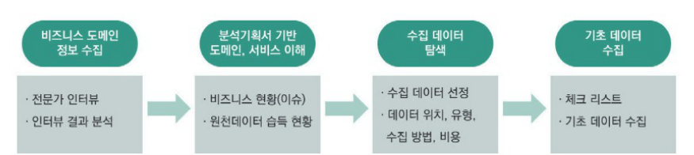
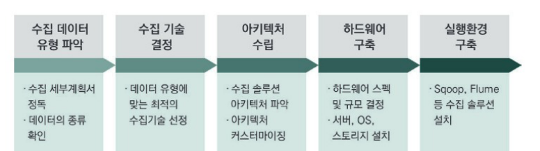
2) 비즈니스 도메인과 원천 데이터 정보 수집
① 비즈니스 도메인 정보
- 비즈니스 모델, 비즈니스 용어집, 비즈니스 프로세스로부터 관련 정보를 습득한다.
- 도메인 전문가 인터뷰를 통해 데이터의 종류, 유형, 특징 정보를 습득한다.
| 구분 | 내용 |
| 비즈니스 모델 | 비즈니스 모델은 비즈니스 전개를 위해 필요한 구성요소 간의 상호 관계를 모델화시켜 놓은 것이다. |
| 비즈니스 용어집 | 특정 비즈니스 영역에서 사용되는 신뢰할 수 있는 용어 및 관계 사전이다. |
| 비즈니스 프로세스 | 다양한 시스템과 비즈니스에 넓게 분산되어 있고 변형되어 있는 복잡하고, 동적인 실체로서 고객에게 가치를 전달하는데 필요한 모든 순차적이거나 병렬적인 활동들의 집합이다. |
| 도메인 전문가 인터뷰 | 인터뷰를 통해 도메인에 사용되는 전문용어 및 다른 의미로 통용되는 일상용어를 익히고, 해당 분야에서 다루어지는 데이터의 종류, 유형, 특징 정보를 습득한다. |
② 원천 데이터 정보
데이터 분석에 필요한 대상 원천 데이터의 수집 가능성, 데이터의 보안, 정확성을 탐색하고, 데이터 수집의 난이도, 수집 비용 등 기초 자료를 수집할 수 있다.
| 구분 | 내용 |
| 데이터의 수집 가능성 | 원천 데이터 수집의 용이성과 데이터 발생 빈도를 탐색하고, 데이터 활용에 있어서 전처리 및 후처리 비용을 대략 산정할 수 있다. |
| 데이터의 보안 | 수집 대상 데이터의 개인정보 포함 여부, 지적 재산권 존재 여부를 판단하여 데이터 분석 시 발생할 수 있는 문제를 예방한다. |
| 데이터 정확성 | 데이터 분석 목적에 맞는 적절한 데이터 항목이 존재하고, 적절한 데이터 품질이 확보될 수 있는지 탐색해야 한다. |
| 수집 난이도 | 원천 데이터의 존재 위치, 데이터의 유형, 데이터 수집 용량, 구축비용, 정제 과정의 복잡성을 고려하여 데이터를 탐색한다. |
| 수집 비용 | 데이터를 수집하기 위해 발생할 수 있는 데이터 획득 비용을 산정할 수 있다. |
3) 내 · 외부 데이터 수집
① 데이터의 종류
- 내부 데이터는 조직 내부의 서비스 시스템, 네트워크 및 서버 장비, 마케팅 관련 시스템 등으로부터 생성되는 데이터를 말한다.
- 외부 데이터는 다양한 소셜 데이터, 특정 기관 데이터, M2M 데이터, LOD 등으로 나눌 수 있다.
| 위치 | 원천 시스템 | 종류 |
| 내부 데이터 | 서비스 시스템 | ERP, CRM, KMS, 포탈, 원장정보시스템, 인증/과금 시스템, 거래시스템 등 |
| 네트워크 및 서버 장비 | 백본, 방화벽, 스위치, IPS, IDS 서버 장비 로그 등 | |
| 마케팅 데이터 | VOC 접수 데이터, 고객 포털 시스템 등 | |
| 외부 데이터 | 소셜 데이터 | 제품 리뷰 커뮤니티, 게시판, 페이스북 |
| 특정 기관 데이터 | 정책 데이터, 토론 사이트 | |
| M2M 데이터 | 센서 데이터, 장비 발생 로그 | |
| LOD | 경제, 의료, 지역 정보, 공공 정책, 과학, 교육, 기술, 산업, 역사, 환경, 과학, 통계 등 공공 데이터 |
② 데이터의 수집 주기
- 내부 데이터는 조직 내부에서 습득할 수 있는 데이터로 실시간으로 수집하여 분석할 수 있도록 한다.
- 외부 데이터는 일괄 수집으로 끝날지, 일정 주기로 데이터를 수집할지를 결정하여 수집 데이터 관리 정책을 정해야 한다.
③ 데이터의 수집 방법
- 내부 데이터는 분석에 적합한 정형화된 형식으로 수집되기 때문에 가공에 많은 노력을 기울이지 않아도 된다.
- 외부 데이터는 분석 목표에 맞는 데이터를 탐색, 수집하고, 분석 목표에 맞게 수집 데이터를 변환하는 노력이 필요하다.
| 구분 | 내부 데이터 | 외부 데이터 |
| 업무 협의 | 조직 내부의 협의에 따른 데이터 수집 | 외부 조직의 데이터 필요시 상호 협약에 의한 수집 |
| 수집 경로 | 인터페이스 생성 | 인터넷을 통한 연결 |
| 수집 대상 | 파일 시스템, DBMS, 센서 등 | 협약에 의한 DBMS 데이터, 웹 페이지, 소셜 데이터, 문서 등 |
4) 데이터 수집 기술
① 데이터 유형별 데이터 수집 기술
수집 시스템 사양 설계를 위해 수집 데이터 유형을 파악하여 그에 맞는 수집 기술을 선정할 수 있다.
| 데이터 유형 | 데이터 수집 방식/기술 | 설명 |
| 정형 데이터 | ETL(Extract Transform Load) | 수집 대상 데이터를 추출 및 가공하여 데이터 웨어하우스에 저장하는 기술이다. |
| FTP(File Transfer Protocol) | TCP/IP나 UDP 프로토콜을 통해 원격지 시스템으로부터 파일을 송수신하는 기술이다. | |
| API(Application Programming Interface) | 솔루션 제조사 및 3rd party 소프트웨어로 제공되는 도구로, 시스템 간 연동을 통해 실시간으로 데이터를 수신할 수 있도록 기능을 제공하는 인터페이스이다. | |
| DBToDB | 데이터베이스 관리시스템(DBMS) 간 데이터를 동기화 또는 전송하는 방법이다. | |
| 스쿱(Sqoop) | 관계형 데이터베이스(RDBMS)와 하둡(hadoop) 간 데이터를 전송하는 방법이다. |
| 데이터 유형 | 데이터 수집 방식/기술 | 설명 |
| 비정형 데이터 | 크롤링(Crawling) | 인터넷상에서 제공되는 다양한 웹 사이트로부터 소셜 네트워크 정보, 뉴스, 게시판 등으로부터 웹 문서 및 정보를 수집하는 기술이다. |
| RSS(Rich Site Summary) | 블로그, 뉴스, 쇼핑몰 등의 웹 사이트에 게시된 새로운 글을 공유하기 위해 XML 기반으로 정보를 배포하는 프로토콜이다. | |
| Open API | 응용 프로그램을 통해 실시간으로 데이터를 수신할 수 있도록 공개된 API다. | |
| 척와(Chukwa) | 분산 시스템으로부터 데이터를 수집, 하둡 파일 시스템에 저장 실시간으로 분석할 수 있는 기능을 제공한다. | |
| 카프카(Kafka) | 대용량 실시간 로그처리를 위한 분산 스트리밍 플랫폼 기술이다. | |
| 반정형 데이터 | 플럼(Flume) | 분산 환경에서 대량의 로그 데이터를 수집 전송하고 분석하는 기능을 제공한다. |
| 스크라이브(Scribe) | 다수의 수집 대상 서버로부터 실시간으로 데이터를 수집, 분산 시스템에 데이터를 저장하는 기능을 제공한다. | |
| 센싱(Sencing) | 센서로부터 수집 및 생성된 데이터를 네트워크를 통해 활용하여 수집하는 기능을 제공한다. | |
| 스트리밍(Streaming) – TCP, UDP, Bluetooth, RFID | 네트워크를 통해 센서 데이터 및 오디오, 비디오 등의 미디어 데이터를 실시간으로 수집하는 기술이다. |
② ETL(Extract Transform Load)
- 하나 이상의 데이터 소스로부터 데이터 웨어하우스, 데이터 마트, 데이터 통합, 데이터 이동(Migration) 등 다양한 응용시스템을 위한 데이터 구축에 필요한 핵심 기술이다.
- ETL은 추출(Extract), 변환(Transform), 적재(Load)의 3단계 프로세스로 구성된다.
| 프로세스 | 설명 |
| 데이터 추출(Extract) | 하나 또는 그 이상의 데이터 원천으로부터 데이터를 획득한다. |
| 데이터 변환(Transform) | 목표로 하는 형식이나 구조로 데이터를 변환한다. 데이터 정제, 변환, 표준화, 통합 등을 진행한다. |
| 데이터 적재(Load) | 변환이 완료된 데이터를 특정 목표 시스템에 저장한다. |
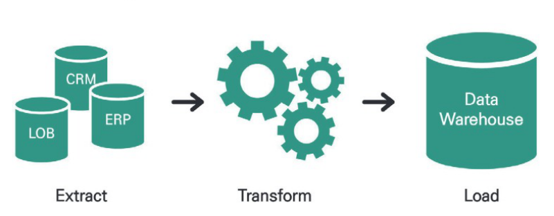
③ FTP(File Transfer Protocol)
- FTP는 대량의 파일(데이터)을 네트워크를 통해 주고받을 때 사용되는 파일 전송 서비스이다.
- 인터넷을 통한 파일 송수신 만을 위해 만들어진 프로토콜이기 때문에 동작 방식이 단순하고 직관적이며, 파일을 빠른 속도로 한꺼번에 주고받을 수 있다.
- FTP 특징
- 인터넷 프로토콜인 TCP/IP 위에서 동작한다.
- 서버와 클라이언트를 먼저 연결하고 이후에 데이터 파일을 전송한다.
- FTP 서비스를 제공하는 서버와 접속하는 클라이언트 사이에 두 개의 연결을 생성한다. (데이터 제어 연결과 데이터 전송 연결)
- 사용자 계정 및 암호 등의 정보나 파일 전송 명령 및 결과 등은 데이터 제어 연결에서, 이후 실제 파일 송수신 작업(올리기, 내려받기)은 데이터 전송 연결에서 처리된다.
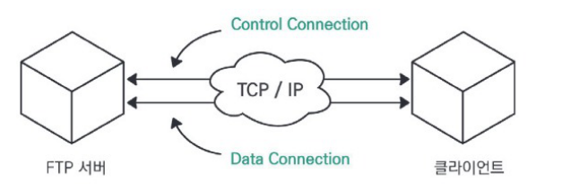
④ 정형 데이터 수집을 위한 아파치 스쿱(Sqoop) 기술
- 관계형 데이터 스토어 간에 대량 데이터를 효과적으로 전송하기 위해 구현된 도구이다.
- 커넥터를 사용하여 MySQL, Oracle, MS SQL 등 관계형 데이터베이스의 데이터를 하둡 파일시스템(HDFS, Hive, Hbase)으로 수집한다.
- 관계형 데이터베이스에서 가져온 데이터들을 하둡 맵리듀스(Mapreduce)로 변환하고, 변환된 데이터들을 다시 관계형 데이터베이스로 내보낼 수 있다.
- 데이터 가져오기/내보내기 과정을 맵리듀스를 통해 처리하기 때문에 병렬처리가 가능하고 장애에도 강한 특징을 갖는다.
- 아파치 스쿱 특징
- 스쿱은 모든 적재 과정을 자동화하고 병렬처리 방식으로 작업한다.
| 특징 | 설명 |
| Bulk import 지원 | 전체 데이터베이스 또는 테이블을 HDFS로 전송 가능하다. |
| 데이터 전송 병렬화 | 시스템 사용률과 성능을 고려한 병렬 데이터를 전송한다. |
| Direct input 제공 | RDB에 매핑하여 Hbase와 Hive에 직접적 import를 제공한다. |
| 프로그래밍 방식의 데이터 인터랙션 | 자바 클래스 생성을 통한 데이터 상호작용을 지원한다. |
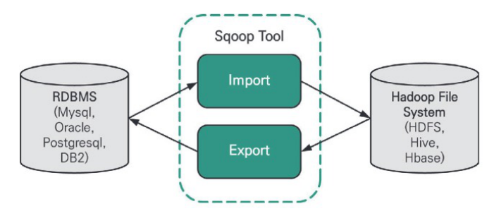
⑤ 로그/센서 데이터 수집을 위한 아파치 플럼(Flume) 기술
- 아파치 플럼(Flume)은 대용량의 로그 데이터를 효과적으로 수집, 집계, 이동시키는 신뢰성 있는 분산 서비스를 제공하는 솔루션이다.
- 스트리밍(Streaming) 데이터 흐름에 기반을 둔 간단하고 유연한 구조를 가진다.
- 플럼에서 하나의 에이전트는 소스, 채널, 싱크로 구성된다. 소스는 웹서버, 로그데이터서버 등 원시데이터소스와 연결되며, 소스로부터 들어오는 데이터는 큐의 구조를 갖는 채널로 들어간 후, 싱크를 통해 목표 시스템으로 전달된다.
- 아파치 플럼 특징
- 플럼은 로그 데이터 수집과 네트워크 트래픽 데이터, 소셜 미디어 데이터, 이메일 메시지 등 대량의 이벤트 데이터 전송을 위해 사용된다.
| 특징 | 설명 |
| 신뢰성(reliability) | 장애 시 로그 데이터의 유실 없이 전송을 보장한다. |
| 확장성(scalability) | 수평 확장이 가능하여 분산 수집 가능한 구조이다. |
| 효율성(efficiency) | 커스터마이징 가능하면서 고성능을 제공한다. |
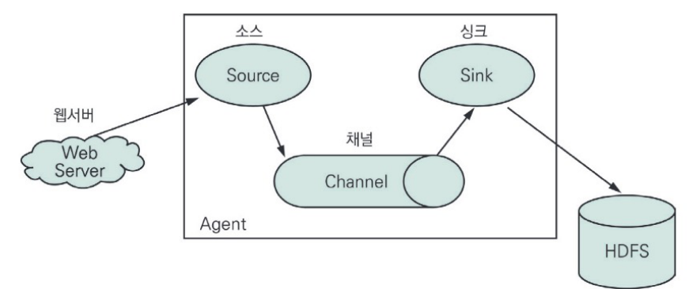
⑥ 웹 및 소셜 데이터 수집을 위한 스크래피(Scrapy) 기술
- 웹사이트를 크롤링하고 구조화된 데이터를 수집하는 도구이다.
- API를 이용하여 다양한 형식의 데이터를 추출할 수 있어, 범용 웹크롤러로 사용될 수 있다.
- 스크래피 특징
- 파이썬 기반의 프레임워크로 스크랩 과정이 단순하며 한 번에 여러 페이지를 불러오기 수월하다.
| 특징 | 설명 |
| 파이썬 기반 | 파이썬 코드에 친숙하다면 쉬운 설정이 가능하다. |
| 단순한 스크랩 과정 | 크롤링 후, 바로 데이터 처리가 가능하다. |
| 다양한 부가 요소 | scrapyd, scrapinghub 등 부가요소, 쉬운 수집, 로깅을 지원한다. |
- ETL은 소스데이터의 형식과 내용을 그대로 유지하여 목표시스템으로 데이터를 이동시킨다.
- 아파치 스쿱(Sqoop)은 스트리밍 데이터 처리에 적합하며, 로그나 네트워크 데이터를 수집하는데 사용된다.
- 아파치 플럼(Flume)은 관계형 데이터베이스의 데이터를 HBASE, HIVE, HDFS로 가져오는데 사용된다.
- 스크래피(Scrapy)는 파이썬 기반의 프레임워크로 주로 웹사이트를 크롤링하는데 사용된다.
- ETL은 하나 이상의 소스데이터를 정제, 표준화, 통합 등의 과정을 거쳐 데이터를 변환한 후 목표 시스템에 저장한다. 플럼은 로그나 스트리밍 데이터 처리에 사용되고, 스쿱은 관계형 데이터베이스 등 정형 데이터 처리를 위해 사용된다.
- ETL
- 스쿱(Sqoop)
- API
- 크롤링
- 크롤링 또는 스크래핑(Scraping)은 웹페이지를 그대로 가져온 후 데이터를 추출하는 것을 말한다.
02 데이터 유형 및 속성 파악
1) 데이터 수집 세부 계획 작성
- 데이터 수집 세부 계획 수립은 데이터 선정 이후, 데이터의 유형, 위치, 데이터의 저장방식, 데이터 수집 기술, 데이터의 보안 사항 등을 구체적으로 작성하는 활동이다.
- 데이터 유형, 위치, 크기, 보관방식, 수집주기, 확보비용, 데이터 이관 절차를 조사하여 세부 계획서를 작성한다.
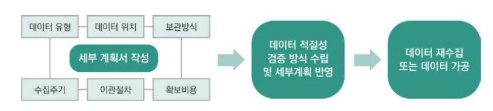
2) 데이터 유형과 위치 및 비용
① 데이터 유형
- 크게 정형 데이터, 반정형 데이터, 비정형 데이터로 나눈다.
| 유형 | 특징 | 종류 |
| 정형 데이터 | 정형화된 스키마를 가진 데이터이다. | RDB, File |
| 반정형 데이터 | 메타 구조를 가지는 데이터이다. | HTML, XML, JSON, RSS, 웹로그, 센서 데이터 |
| 비정형 데이터 | 이미지나 동영상으로 존재하는 데이터이다. | 동영상, 이미지, 텍스트 |
② 데이터 위치
- 수집 데이터의 원천에 따라 내부 데이터와 외부 데이터로 구분할 수 있다.
| 위치 | 특징 | 분석 가치 |
| 내부 데이터 |
| 보통 |
| 외부 데이터 |
| 높음 |
③ 데이터 확보 비용 산정
- 데이터 확보 비용 산정 시 데이터의 크기, 수집 주기, 수집 기술, 수집 방식, 대상 데이터의 가치를 고려한다.
| 비용 요소 | 설명 |
| 데이터의 종류 | RDB, 파일, HTML |
| 데이터의 크기 및 보관 주기 | 데이터 수집, 저장 크기, 수집 데이터의 저장 주기 |
| 데이터의 수집 주기 | 실시간, 매시, 매일, 매주, 매달 |
| 데이터의 수집 방식 | 자동 수집, 수동 수집 |
| 데이터의 수집 기술 | ETL, FTP, 크롤러, DBtoDB |
| 데이터의 가치성 | 분석 수행을 위한 목적성 있는 대상 데이터 |
3) 수집되는 데이터 형태
① HTML(Hypertext Markup Language)
- 웹 페이지를 만들 때 사용되는 문서 형식을 말한다.
- 텍스트, 태그, 스크립트로 구성된다.
| 구분 | 내용 |
| 텍스트 | 실제 표현하고자 하는 내용으로 웹 문서의 본문이다. |
| 태그 | 텍스트에 속성, 기능을 부여하기 위해 문서 중간에 붙여주는 꼬리표이다. |
| 스크립트 | 동적인 웹 문서 작성을 지원하는 명령어들의 집합이다. |
② XML(eXtensible Markup Language)
- 데이터를 표현하기 위해서 태그(tag)를 사용하는 언어이다.
- 엘리먼트, 속성, 처리명령, 엔티티, 주석, CDATA 섹션으로 구성된다.
| 구분 | 내용 |
| 엘리먼트 | <head>...</head>, <a>...</a> 같이 쌍으로 존재하는 태그이다. |
| 속성 | <img src='abc.gif/> 같이 태그 안에 특정 의미를 상세화한 표현이다. |
| 처리명령 | <? 와 ?> 사이에 표현되고 특정 응용프로그램이 처리할 정보나 명령을 지정한다. |
| 엔티티 | <!ENTITY xml "eXtensible Markup Language">를 정의하고, XML문서 내에서는 &xml;과 같이 사용하는 것처럼, < > &를 사용해서 문자열을 특정 문자열로 대체하는 것이다. |
| 주석 | <!— 와 —> 사이에 Comment를 정의하는 것이다. |
| CDATA 섹션 | <![CDTA[<greeting>Hello</greeting>]]> 으로 정의하여, <greeting>Hello</greeting>를 모두 문자열로 인식하게 한다. |
③ JSON(JavaScript Object Notation)
- 자바스크립트를 위해 객체 형식으로 자료를 표현하는 문서 형식이며, 경량의 데이터 교환 방식이다.
| 자료형 | 내용 |
| 수(Number) |
|
| 문자열 | 큰따옴표로 묶어서 사용한다. 예 "abcd", "₩"JSON₩"" |
| 배열 | 대괄호로 나타낸다. 예 [10, {"a" : 30 }, [40, "서른"]] |
| 객체 | 이름/값 쌍의 집합이다. 예 {"name":10, "name2":"값", "name3":false} |
4) 데이터 저장 방식
- 파일 시스템 : 데이터를 읽고, 쓰고, 찾기 위해 일정한 규칙으로 파일에 이름을 명명하고 파일의 위치를 지정하는 체계이다.
- 관계형 데이터베이스 : 데이터의 종류나 성격에 따라 여러 개의 칼럼을 포함하는 정형화된 테이블로 구성된 데이터 항목들의 집합체이다.
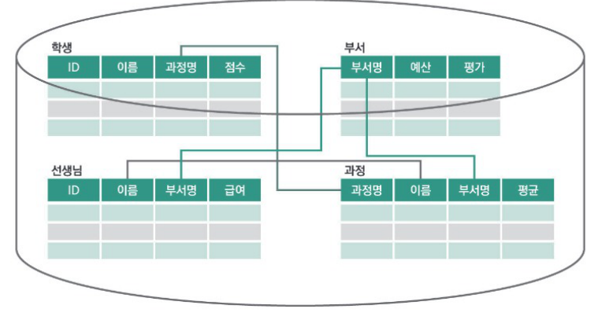
- 분산처리 데이터베이스 : 데이터의 집합이 여러 물리적 위치에 분산 배치되어 저장되는 데이터베이스이다.
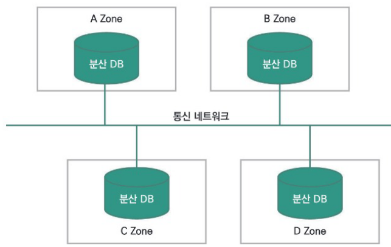
5) 데이터 적절성 검증
- 데이터 누락 점검 : 수집 데이터 세트의 누락, 결측 여부를 판단하여 누락 발생 시 재수집한다.
- 소스 데이터와 비교 : 수집 데이터와 소스 데이터의 사이즈 및 개수를 비교 검증한다.
- 데이터의 정확성 점검 : 유효하지 않는 데이터 존재여부를 점검한다.
- 보안 사항 점검 : 수집 데이터의 개인정보 유무 등 보안 사항의 점검이 필요하다.
- 저작권 점검 : 데이터의 저작권 등 법률적 검토를 수행한다.
- 대량 트래픽 발생 여부 : 네트워크 및 시스템에 트래픽을 발생시키는 데이터 여부를 검증한다.
- 수집 데이터 세트의 누락, 결측 여부를 판단하여 누락 발생 시 재수집한다.
- 수집 데이터와 소스 데이터의 사이즈 및 개수를 비교 검증한다.
- 유효하지 않는 데이터는 데이터의 중복 검사를 통해 확인할 수 있다.
- 개인정보 데이터 발견 시 개인정보 비식별화 필요성을 표시한다.
- 유효하지 않은 정보는 메타데이터나 데이터에 정의된 규칙들을 통해 점검하며, 일정한 패턴이 있는 경우 패턴이 틀린 오류 데이터 값을 식별하는 방법을 사용한다.
03 데이터 변환
1) 데이터 변환(Data Transformation)
데이터를 하나의 표현 형식에서 다른 형식으로 변형하는 과정이다.
① 데이터 변환 방식의 종류
- 비정형 데이터를 정형 데이터 형태로 저장하는 방식(관계형 데이터베이스)
- 수집 데이터를 분산파일시스템으로 저장하는 방식(HDFS 등)
- 주제별, 시계열적으로 저장하는 방식(데이터 웨어하우스)
- 키-값 형태로 저장하는 방식(NoSQL)
| 수집 데이터 저장 형태 | 저장 솔루션 | 라이센스 |
| 관계형 데이터베이스 | MySQL, Oracle, DB2, PostgreSQL 등 | 상용 라이센스, 오픈소스 |
| 분산데이터 저장 | HDFS(hadoop Distributed File System) | 오픈소스 |
| 데이터 웨어하우스 | 네티자, 테라데이타, 그린플럼의 DW 솔루션 | 상용 라이선스 |
| NoSQL | Hbase, Cassandra, MongoDB | 오픈소스 |
② 데이터 변환 수행 자료
- 데이터 수집 계획서
- 데이터 변환 솔루션
- 소프트웨어 아키텍처 개념도
- 수집 솔루션 매뉴얼
- 하둡 오퍼레이션 매뉴얼
2) 데이터베이스 구조 설계
- 수집 데이터를 저장하기 위한 데이터베이스 구조를 설계한다.
- 수집 데이터를 바로 HDFS에 저장하여 데이터를 분석할 수 있다.
- 수집 데이터를 루비(Ruby), 파이썬(Python) 등으로 데이터 변환 과정을 거쳐 데이터베이스에 저장하기도 한다.
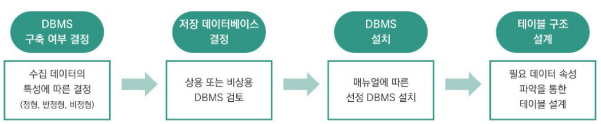
① DBMS 구축 여부 결정
- 수집 대상을 확인하고, 필요 데이터의 속성을 파악하여 DBMS 구축 여부를 결정한다.
- 수집 데이터의 특성에 따라 저장 데이터베이스 생성 여부를 결정한다.
- 수집 데이터가 정형 데이터일 경우는 수집 솔루션을 거쳐 바로 데이터베이스에 저장하지만, 그렇지 않은 경우 저장하고자 하는 데이터베이스의 종류를 선택하고 데이터에 맞게 모델링을 한다.
- 저장 데이터베이스는 분석이 쉬운 RDBMS를 보편적으로 사용한다.
② 저장 데이터베이스 결정
- 다양한 상용, 비상용, 오픈소스 DBMS를 검토한다.
③ DBMS 설치
- 선택한 DBMS를 설치하고, 정상적인 설치 여부를 확인한다.
④ 테이블 구조 설계
- 필요 데이터의 속성을 구체적으로 파악한다.
- 속성에 따라 테이블 구조를 설계하여 테이블을 생성한다.
3) 비정형/반정형 데이터의 변환
데이터 전처리나 후처리가 수행되기 전에 비정형/반정형 데이터를 구조적 형태로 전환하여 저장하는 과정이다.
① 수집 데이터의 속성 구조 파악
- 수집할 데이터를 파악한다.
예 title, votes, body, tags, link 등 - 수집할 데이터 구조를 정의하고 적절한 변수명으로 구분한다.
② 데이터 수집 절차에 대한 수행 코드 정의
- 추출하고자 하는 정보들의 위치와 정보 구조를 파악한다.
- 필요 데이터를 추출한다.
③ 데이터 저장 프로그램 작성
- 생성된 데이터베이스 테이블에 수집 데이터를 저장하는 프로그램을 작성한다.
④ 데이터베이스에 저장
- 데이터베이스 테이블로 수집 데이터를 저장한다.
4) 융합 데이터베이스 설계
- 데이터의 유형과 의미를 파악하여 활용 목적별 융합 DB를 설계한다.
- 구조화된 형태로 수집, 저장된 데이터의 의미를 파악하여 해당 데이터를 활용할 수 있는 융합 DB로 재구성할 수 있다.
- 활용 업무데이터 요구사항을 분석하고, 데이터 표준화 활동 및 모델링 과정을 수행하여야 한다.
① 요구사항 분석
- 업무 활용 목적과 방향을 파악하여 어떤 데이터의 속성들이 필요한지 파악한다.
- 필요한 데이터 항목, 개인정보 또는 민감정보 포함 여부를 식별한다.
② 데이터 표준화와 모델링 수행
- 다양한 데이터 소스로부터 수집한 데이터에는 표준화 및 모델링 과정을 수행한다.
- 표준 코드, 표준 용어, 데이터 도메인(데이터값이 공통으로 갖는 형식과 값의 영역) 등을 정의한다.
- 수집 데이터로부터 엔티티와 애트리뷰트를 추출하여 엔티티 간의 관계를 정의하는 개념적 설계와 관계형 스키마를 작성하는 논리적 설계를 수행한다.
- 개념적 설계 수행
- 저장된 데이터를 엔티티와 애트리뷰트로 추출하여, 엔티티 간의 관계를 정의하고 ER 다이어그램을 그린다.
| 엔티티 | 애트리뷰트 |
| IT기술 | IT기술번호, 이름, 분야, 보급률 |
| 정책기관 | 정책기관번호, 이름, 전화번호, 주소 |
| 조사 | 정책기관번호, IT기술번호, 조사명, 조사일자, 조사내용 |
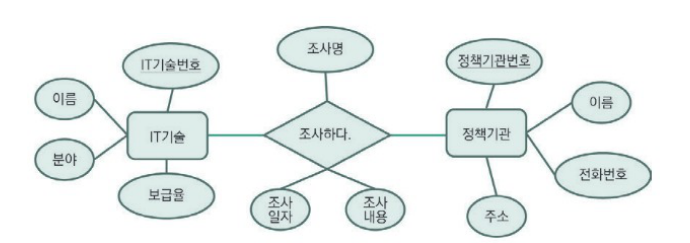
- 논리적 설계 수행
- 작성된 ER 다이어그램을 기반으로 매핑하여 관계형 스키마를 만들어 낸다.
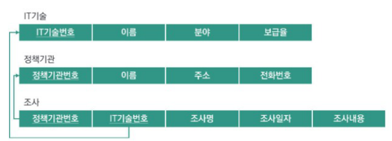
5) 고려사항
- 비정형, 반정형 데이터를 데이터 분석의 용이성을 위해 정형화된 데이터베이스로 변환함에 집중한다.
- 수집 데이터의 속성 구조를 정확히 파악하여야 툴을 이용한 데이터를 쉽게 저장할 수 있다.
- 융합 DB 구성은 활용 업무 목적을 정확히 판단하는 것이 중요하고, 쉽게 자동화 구축될 수 있도록 설계하여야 한다.
04 데이터 비식별화
1) 비식별화 개요
- 개인정보 비식별화는 개인정보를 식별할 수 있는 값들을 몇 가지 정해진 규칙으로 대체하거나 사람의 판단에 따라 가공하여 개인을 알아볼 수 없도록 하는 조치를 말한다.
- 개인정보 보호와 데이터 분석의 균형을 맞추는 중요한 요소로, 정보주체를 알아볼 수 없도록 비식별 조치를 적정하게 한 비식별 정보는 개인정보가 아닌 것으로 추정되며, 따라서 빅데이터 분석 등에 활용이 가능하다.
- 데이터의 유효성을 유지하면서 개인 식별 가능성을 제거하는 것이 목표이다.
① 식별자(Identifier)와 속성자(Attribute value)
- 식별자는 개인 또는 개인과 관련한 사물에 고유하게 부여된 값 또는 이름을 말한다.
- 데이터셋에 포함된 식별자는 원칙적으로 삭제조치하며, 데이터 이용 목적상 필요한 식별자는 비식별 조치 후 활용한다.
- 속성자는 개인과 관련된 정보로서 다른 정보와 쉽게 결합하는 경우 특정 개인을 알아볼 수도 있는 정보를 말한다.
- 데이터셋에 포함된 속성자도 데이터 이용 목적과 관련이 없는 경우에는 원칙적으로 삭제하며, 데이터 이용 목적과 관련이 있을 경우 가명처리, 총계처리 등의 기법을 활용하여 비식별 조치한다.
- 고유식별정보(주민등록번호, 여권번호, 외국인등록번호, 운전면허번호)
- 성명(한자 · 영문 성명, 필명 등 포함)
- 상세 주소(구 단위 미만까지 포함된 주소)
- 날짜정보 : 생일(양/음력), 기념일(결혼, 돌, 환갑 등), 자격증 취득일 등
- 전화번호(휴대전화번호, 집전화, 회사전화, 팩스번호)
- 의료기록번호, 건강보험번호, 복지 수급자 번호
- 통장계좌번호, 신용카드번호
- 각종 자격증 및 면허 번호
- 자동차 번호, 각종 기기의 등록번호 & 일련번호
- 사진(정지사진, 동영상, CCTV 영상 등)
- 신체 식별정보(지문, 음성, 홍채 등)
- 이메일 주소, IP 주소, Mac 주소, 홈페이지 URL 등
- 식별코드(아이디, 사원번호, 고객번호 등)
- 기타 유일 식별번호 : 군번, 개인사업자의 사업자 등록번호 등
| 특성 분류 | 속성자의 예 |
| 개인 특성 |
|
| 신체 특성 |
|
| 신용 특성 |
|
| 경력 특성 |
|
| 전자적 특성 |
|
| 가족 특성 |
|
가. 개인정보 보호법 등 관련 법률에서 규정하고 있는 개인정보의 개념은 다음과 같으며, 이에 해당하지 않는 경우에는 개인정보가 아니다.
나. 개인정보는 ⅰ)살아 있는 ⅱ)개인에 관한 ⅲ)정보로서 ⅳ)개인을 알아볼 수 있는 정보이며, 해당 정보만으로는 특정 개인을 알아볼 수 없더라도 ⅴ)다른 정보와 쉽게 결합하여 알아볼 수 있는 정보를 포함한다.
- ⅰ) (살아있는) 자에 관한 정보이어야 하므로 사망한 자, 자연인이 아닌 법인, 단체 또는 사물 등에 관한 정보는 개인정보에 해당하지 않는다.
- ⅱ) (개인에 관한) 정보이어야 하므로 여럿이 모여서 이룬 집단의 통계값 등은 개인정보에 해당하지 않음
- ⅲ) (정보)의 종류, 형태, 성격, 형식 등에 관하여는 특별한 제한이 없다.
- ⅳ) (개인을 알아볼 수 있는 정보)이므로 특정 개인을 알아보기 어려운 정보는 개인정보가 아니다.
- ** 여기서 ‘알아볼 수 있는’의 주체는 해당 정보를 처리하는 자(정보의 제공 관계에 있어서는 제공받은 자를 포함)이며, 정보를 처리하는 자의 입장에서 개인을 알아볼 수 없다면 그 정보는 개인정보에 해당하지 않는다.
- ⅴ) (다른 정보와 쉽게 결합하여)란 결합 대상이 될 다른 정보의 입수 가능성이 있어야 하고, 또 다른 정보와의 결합 가능성이 높아야 함을 의미한다.
- ** 즉, 합법적으로 정보를 수집할 수 없거나 결합을 위해 불합리한 정도의 시간, 비용 등이 필요한 경우라면 “쉽게 결합”할 수 있는 상태라고 볼 수 없다.
② 비식별 조치 방법
- 가명처리, 총계처리, 데이터 삭제, 데이터 범주화, 데이터 마스킹 등 여러 가지 기법을 단독 또는 복합적으로 활용한다.
- 각각의 기법에는 이를 구현할 수 있는 다양한 세부기술이 있으며, 데이터 이용 목적과 기법별 장 · 단점 등을 고려하여 적절한 기법 · 세부기술을 선택 · 활용한다.
| 처리기법 | 설명 및 예시 | 세부기술 |
| 가명처리 (Pseudonymization) |
|
① 휴리스틱 가명화 ② 암호화 ③ 교환 방법 |
| 총계처리 (Aggregation) |
|
① 총계처리 ② 부분총계 ③ 라운딩 ④ 재배열 |
| 데이터 삭제 (Data Reduction) |
|
① 식별자 삭제 ② 식별자 부분삭제 ③ 레코드 삭제 ④ 식별요소 전부삭제 |
| 데이터 범주화 (Data Suppression) |
|
① 감추기 ② 랜덤 라운딩 ③ 범위 방법 ④ 제어 라운딩 |
| 데이터 마스킹 (Data Masking) |
|
① 임의 잡음 추가 ② 공백과 대체 |
2) 가명처리(Pseudonymization)
개인 식별이 가능한 데이터를 직접적으로 식별할 수 없는 다른 값으로 대체하는 기법이다.
| 장점 | 데이터의 변형 또는 변질 수준이 적다. |
| 단점 | 대체 값 부여 시에도 식별 가능한 고유 속성이 계속 유지된다. |
① 휴리스틱 가명화(Heuristic Pseudonymization)
- 식별자에 해당하는 값들을 몇 가지 정해진 규칙으로 대체하거나 사람의 판단에 따라 가공하여 자세한 개인정보를 숨기는 방법이다.
- 식별자의 분포를 고려하거나 수집된 자료의 사전 분석을 하지 않고 모든 데이터를 동일한 방법으로 가공하기 때문에 사용자가 쉽게 이해하고 활용 가능하다.
- 활용할 수 있는 대체 변수에 한계가 있으며, 다른 값으로 대체하는 일정한 규칙이 노출되는 취약점이 있어 규칙 수립 시 개인을 쉽게 식별할 수 없도록 세심한 고려가 필요하다.
예 성명을 홍길동, 임꺽정 등 몇몇 일반화된 이름으로 대체하여 표기하거나 소속기관명을 화성, 금성 등으로 대체하는 등 사전에 규칙을 정하여 수행한다. - 적용정보 : 성명, 사용자 ID, 소속(직장)명, 기관번호, 주소, 신용등급, 휴대전화번호, 우편번호, 이메일 주소 등이다.
② 암호화(Encryption)
- 정보 가공시 일정한 규칙의 알고리즘을 적용하여 암호화함으로써 개인정보를 대체하는 방법이다.
- 통상적으로 다시 복호가 가능하도록 복호화 키(key)를 가지고 있어서 이에 대한 보안방안도 필요하다.
- 일방향 암호화(one-way encryption 또는 hash)를 사용하는 경우는 이론상 복호화가 원천적으로 불가능하다.
- 적용정보 : 주민등록번호, 여권번호, 의료보험번호, 외국인등록번호, 사용자 ID, 신용카드번호, 생체정보 등이다.
③ 교환 방법(Swapping)
- 기존의 데이터베이스의 레코드를 사전에 정해진 외부의 변수(항목)값과 연계하여 교환한다.
- 적용정보 : 사용자 ID, 요양기관번호, 기관번호, 나이, 성별, 신체정보(신장, 혈액형 등), 소득, 휴대전화번호, 주소 등이다.
3) 총계처리(Aggregation)
- 통계 값(전체 혹은 부분)을 적용하여 특정 개인을 식별할 수 없도록 한다.
- 개인과 직접 관련된 날짜 정보(생일, 자격 취득일), 기타 고유 특징(신체정보, 진료기록, 병력정보, 특정소비기록 등 민감한 정보)을 주요 대상으로 한다.
- 데이터 전체 또는 부분을 집계(총합, 평균 등)한다.
예 집단에 속한 각 개인의 나이값을 평균 나이값(대푯값)으로 대체한다.
| 장점 | 민감한 수치 정보에 대하여 비식별 조치가 가능하며, 통계분석용 데이터셋 작성에 유리하다. |
| 단점 | 정밀 분석이 어려우며, 집계 수량이 적을 경우 추론에 의한 식별 가능성이 있다. |
① 부분총계(Micro Aggregation)
- 데이터셋 내 일정부분 레코드만 총계 처리하며, 다른 데이터 값에 비하여 오차 범위가 큰 항목을 통계값(평균 등)으로 변환한다.
예 다양한 연령대의 소득 분포에 있어서 40대의 소득 분포 편차가 다른 연령대에 비하여 매우 크거나 특정 소득 구성원을 포함하고 있을 경우, 40대의 소득만 선별하여 평균값을 구한 후 40대에 해당하는 각 개인의 소득 값을 해당 평균값으로 대체한다.
② 라운딩(Rounding)
- 집계 처리된 값에 대하여 라운딩(올림, 내림, 반올림) 기준을 적용하여 최종 집계 처리하는 방법이다.
- 일반적으로 세세한 정보보다는 전체 통계정보가 필요한 경우 많이 사용한다.
예 23세, 41세, 57세, 26세, 33세 각 나이 값을 20대, 30대, 40대, 50대 등 각 대표 연령대로 표기하거나 3,576,000원, 4,210,000원 등의 소득 값을 일부 절삭하여 3백만원, 4백만원 등으로 집계 처리하는 방식이다.
③ 재배열(Rearrangement)
- 기존 정보 값은 유지하면서 개인이 식별되지 않도록 데이터를 재배열하는 방법이다.
- 개인의 정보를 타인의 정보와 뒤섞어서 전체 정보에 대한 손상 없이 특정 정보가 해당 개인과 연결되지 않도록 한다.
예 데이터 셋에 포함된 나이, 소득 등의 정보를 개인별로 서로 교환하여 재배치하게 되면 개인별 실제 나이와 소득과 다른 비식별 자료를 얻게 되지만, 전체적인 통계 분석에 있어서는 자료의 손실 없이 분석 가능하다. - 적용정보 : 나이, 신장, 소득, 질병, 신용등급, 학력 등이다.
4) 데이터 삭제(Data Reduction)
개인을 식별 할 수 있는 정보(이름, 전화번호, 주소, 생년월일, 사진, 고유식별정보(주민등록번호, 운전면허번호 등), 생체정보(지문, 홍채, DNA 정보 등), 기타(등록번호, 계좌번호, 이메일주소 등))를 주요 대상으로 한다.
| 장점 | 개인 식별요소의 전부 및 일부 삭제 처리가 가능하다. |
| 단점 | 분석의 다양성과 분석 결과의 유효성 · 신뢰성이 저하된다. |
① 식별자 (부분)삭제
- 원본 데이터에서 식별자를 단순 삭제하는 방법과 일부만 삭제하는 방법이 있다.
- 남아 있는 정보 그 자체로도 분석의 유효성을 가져야 함과 동시에 개인을 식별할 수 없어야 하며, 인터넷 등에 공개되어 있는 정보 등과 결합하였을 경우에도 개인을 식별할 수 없어야 한다.
예 생년월일(yy-mm-dd)을 분석목적에 따라 yy로 대체 가능하다면 mm-dd 값은 삭제한다.
② 레코드 삭제(Reducing Records)
- 다른 정보와 뚜렷하게 구별되는 레코드 전체를 삭제하는 방법이다.
- 통계분석에 있어서 전체 평균에 비하여 오차범위를 벗어나는 자료를 제거할 때에도 사용 가능하다.
예 소득이 다른 사람에 비하여 뚜렷이 구별되는 값을 가진 정보는 해당 정보 전체를 삭제한다.
③ 식별요소 전부삭제
- 식별자뿐만 아니라 잠재적으로 개인을 식별할 수 있는 속성자까지 전부 삭제하여 프라이버시 침해 위험을 줄이는 방법이다.
- 개인정보 유출 가능성을 최대한 줄일 수 있지만 데이터 활용에 필요한 정보까지 사전에 모두 없어지기 때문에 데이터의 유용성이 낮아지는 문제가 발생한다.
예 연예인 · 정치인 등의 가족정보(관계정보), 판례 및 보도 등에 따라 공개되어 있는 사건과 관련되어 있음을 알 수 있는 정보 등 잠재적 식별자까지 사전에 삭제함으로써 연관성 있는 정보의 식별 및 결합을 예방한다.
5) 데이터 범주화(Data Suppression)
특정 정보를 해당 그룹의 대푯값 또는 구간값으로 변환(범주화)하여 개인 식별을 방지한다.
| 장점 | 통계형 데이터 형식이므로 다양한 분석 및 가공 가능하다. |
| 단점 | 정확한 분석결과 도출이 어려우며, 데이터 범위 구간이 좁혀질 경우 추론 가능성이 있다. |
① 감추기
- 명확한 값을 숨기기 위하여 데이터의 평균 또는 범주 값으로 변환하는 방식이다.
- 다만 특수한 성질을 지닌 개인으로 구성된 단체 데이터의 평균이나 범주 값은 그 집단에 속한 개인의 정보를 쉽게 추론할 수 있다.
② 랜덤 라운딩(Random Rounding)
- 수치 데이터를 임의의 수 기준으로 올림(round up) 또는 내림(round down)하는 기법으로 수치 데이터 이외의 경우에도 확장 적용 가능하다.
예 나이, 우편번호 등과 같은 수치 정보로 주어진 식별자는 일의 자리, 십의 자리 등 뒷자리 수를 숨기고 앞자리 수만 나타내는 방법이다. (나이 : 42세, 45세 → 40대로 표현)
③ 범위 방법(Data Range)
- 수치 데이터를 임의의 수 기준의 범위(range)로 설정하는 기법이다.
- 해당 값의 범위 또는 구간(interval)으로 표현한다.
예 3,300만 원을 3,000~4,000만 원으로 대체 표기한다.
④ 제어 라운딩(Controlled Rounding)
- 랜덤 라운딩 방법에서 어떠한 특정 값을 변경할 경우 행과 열의 합이 일치하지 않는 단점 해결을 위해 행과 열이 맞지 않는 것을 제어하여 일치시키는 기법이다.
- 컴퓨터 프로그램으로 구현하기 어렵고 복잡한 통계표에는 적용하기 어려우며, 해결할 수 있는 방법이 존재하지 않을 수 있어 아직 현장에서는 잘 사용하지 않는다.
6) 데이터 마스킹(Data Masking)
데이터의 전부 또는 일부분을 대체 값(공백, 노이즈 등)으로 변환한다.
| 장점 | 개인 식별 요소를 제거하는 것이 가능하며, 원 데이터 구조에 대한 변형이 적다. |
| 단점 | 마스킹을 과도하게 적용할 경우 데이터 필요 목적에 활용하기 어려우며 마스킹 수준이 낮을 경우 특정한 값에 대한 추론이 가능하다. |
① 임의 잡음 추가(Adding Random Noise)
- 개인 식별이 가능한 정보에 임의의 숫자 등 잡음을 추가(더하기 또는 곱하기)하는 방법이다.
- 지정된 평균과 분산의 범위 내에서 잡음이 추가되므로 원 자료의 유용성을 해치지 않으나, 잡음 값은 데이터 값과는 무관하기 때문에, 유효한 데이터로 활용하기 곤란하다.
예 실제 생년월일에 6개월의 잡음을 추가할 경우, 원래의 생년월일 데이터에 1일부터 최대 6개월의 날짜가 추가되어 기존의 자료와 오차가 날 수 있도록 적용한다.
② 공백(blank)과 대체(impute)
- 특정 항목의 일부 또는 전부를 공백 또는 대체문자(‘*’, ‘_’ 등이나 전각 기호)로 바꾸는 기법이다.
예 생년월일 1999-09-09를 19**-**-**로 대체 표기한다.
7) 적정성 평가
- 개인정보 비식별 조치가 충분하지 않은 경우 공개 정보 등 다른 정보와의 결합, 다양한 추론 기법 등을 통해 개인이 식별될 우려가 있으므로, 개인정보 보호책임자 책임 하에 외부전문가가 참여하는 「비식별 조치 적정성 평가단」을 구성, 개인식별 가능성에 대한 엄격한 평가가 필요하다.
- 적정성 평가 시 프라이버시 보호 모델 중 최소한의 수단으로 k-익명성을 활용하며, 필요시 추가적인 평가모델(l-다양성, t-근접성, m-유일성)을 활용한다.
| 기법 | 의미 | 적용 |
| k-익명성 | 특정인임을 추론할 수 있는지 여부를 검토, 일정 확률수준 이상 비식별 되도록 하는 기법이다. | 동일한 값을 가진 레코드를 k개 이상으로 하며, 이 경우 특정 개인을 식별할 확률은 1/k이다. |
| l-다양성 | 특정인 추론이 안된다고 해도 민감한 정보의 다양성을 높여 추론 가능성을 낮추는 기법이다. | 각 레코드는 최소 l개 이상의 다양성을 가지도록 하여 동질성 또는 배경지식 등에 의한 추론을 방지한다. |
| t-근접성 | l-다양성뿐만 아니라, 민감한 정보의 분포를 낮추어 추론 가능성을 더욱 낮추는 기법이다. | 전체 데이터 집합의 정보 분포와 특정 정보의 분포 차이를 t 이하로 하여 추론을 방지한다. |
| m-근접성 | 원본 데이터와 동일한 속성 값의 조합을 비식별 결과 데이터에 최소 m개 이상 포함시켜 추론 가능성을 낮추는 기법이다. | 비식별 데이터셋의 속성을 조합했을 때 동일한 값을 m개 이상으로 하여 추론을 방지한다. |
** k, l, t, m 값은 전문가 등이 검토하여 마련한다.
① k-익명성(k-anonymity)
- 공개된 데이터에 대한 연결공격 등 취약점을 방어하기 위해 제안된 개인정보 보호 모델로 비식별화 조치를 위한 최소의 기준으로 사용된다.
- k-익명성은 주어진 데이터 집합에서 같은 값이 적어도 k개 이상 존재하도록 하여 쉽게 다른 정보로 결합할 수 없도록 한다.
- 데이터 집합의 일부를 수정하여 모든 레코드가 자기 자신과 동일한(구별되지 않는) k-1개 이상의 레코드를 가진다.
- 예를 들어, <표 A>의 의료 데이터가 비식별 조치된 <표 B>에서 1~4, 5~8, 9~12 레코드는 서로 구별되지 않는다. 따라서, 비식별된 데이터 집합에서는 공격자가 정확히 어떤 레코드가 공격 대상인지 알아낼 수 없다.
- 적정성 평가단은 적절한 k-값을 선택한 후 평가(예 k=3, k=4 등)를 진행한다.
| 구분 | 지역 코드 | 연령 | 성별 | 질병 |
| 1 | 13053 | 28 | 남 | 전립선염 |
| 2 | 13068 | 21 | 남 | 전립선염 |
| 3 | 13068 | 29 | 여 | 고혈압 |
| 4 | 13053 | 23 | 남 | 고혈압 |
| 5 | 14853 | 50 | 여 | 위암 |
| 6 | 14853 | 47 | 남 | 전립선염 |
| 7 | 14850 | 55 | 여 | 고혈압 |
| 8 | 14850 | 49 | 남 | 고혈압 |
| 9 | 13053 | 31 | 남 | 위암 |
| 10 | 13053 | 37 | 여 | 위암 |
| 11 | 13068 | 36 | 남 | 위암 |
| 12 | 13068 | 35 | 여 | 위암 |
| 구분 | 지역 코드 | 연령 | 성별 | 질병 | 상태 |
| 1 | 130** | < 30 | * | 전립선염 | 다양한 질병이 혼재되어 안전 |
| 2 | 130** | < 30 | * | 전립선염 | |
| 3 | 130** | < 30 | * | 고혈압 | |
| 4 | 130** | < 30 | * | 고혈압 | |
| 5 | 1485* | > 40 | * | 위암 | 다양한 질병이 혼재되어 안전 |
| 6 | 1485* | > 40 | * | 전립선염 | |
| 7 | 1485* | > 40 | * | 고혈압 | |
| 8 | 1485* | > 40 | * | 고혈압 | |
| 9 | 130** | 3* | * | 위암 | 모두가 동일 질병 (위암)으로 취약 |
| 10 | 130** | 3* | * | 위암 | |
| 11 | 130** | 3* | * | 위암 | |
| 12 | 130** | 3* | * | 위암 |
일반적으로 활용하는 데이터의 이름, 주민등록번호 등과 같이 개인을 직접 식별할 수 있는 데이터는 삭제한다. 그러나 활용 정보의 일부가 다른 공개되어 있는 정보 등과 결합하여 개인을 식별하는 문제(연결공격)가 발생 가능하다.
- 예를 들어, 의료데이터와 선거인명부가 지역 코드, 연령, 성별에 의해 결합되면, 개인의 민감한 정보인 병명이 드러날 수 있다.
예 김민준 (13053, 28, 남자)→ 환자 레코드 1번→ 전립선염
1. 동질성 공격(Homogeneity attack)
k-익명성에 의해 레코드들이 범주화 되었더라도 일부 정보들이 모두 같은 값을 가질 수 있기 때문에 데이터 집합에서 동일한 정보를 이용하여 공격 대상의 정보를 알아내는 공격이다.
- <표 A>에서 범주화의 기초가 되는 정보(지역코드, 연령, 성별)에 대해서는 여러 다양한 값들이 혼재되어 있어서 연결 공격에 의한 식별이 어렵지만, 이 정보와 연결된 정보(질병)는 ‘k-익명성’의 기초가 아니기 때문에 발생할 수 있다.
- 예를 들어, <표 B>에서 레코드 9~12의 질병정보는 모두 ‘위암’이므로 k-익명성 모델이 적용되었음에도 불구하고 그 질병정보가 직접적으로 노출된다.
2. 배경지식에 의한 공격(Background knowledge attack)
주어진 데이터 이외의 공격자의 배경 지식을 통해 공격 대상의 민감한 정보를 알아내는 공격이다.
- <표 B>의 1~4 레코드 중 하나이며 질병은 전립선염 또는 고혈압임을 알 수 있는데, ‘여자는 전립선염에 걸릴 수 없다’라는 배경 지식이 있고, 특정하는 대상이 여자라면 익명성 범위가 줄어들게 된다.
② l-다양성
- k-익명성에 대한 두 가지 공격, 즉 동질성 공격 및 배경지식에 의한 공격을 방어하기 위한 모델로, 주어진 데이터 집합에서 함께 비식별되는 레코드들은 (동질 집합에서) 적어도 l개의 서로 다른 정보를 가지도록 한다.
- 비식별 조치 과정에서 충분히 다양한(l개 이상) 서로 다른 정보를 갖도록 동질 집합을 구성함으로써 다양성의 부족으로 인한 공격에 방어가 가능하고, 배경지식으로 인한 공격에도 일정 수준의 방어능력을 가질 수 있다.
- 예를 들어, <표 C>에서 모든 동질 집합은 3-다양성(l=3)을 통해 비식별되어 3개 이상의 서로 다른 정보를 가지며, <표 B>와 같이 동일한 질병으로만 구성된 동질 집합이 존재하지 않는다.
- 공격자가 질병에 대한 배경지식(예 여자는 전립선염에 걸리지 않음)이 있더라도 어느 정도의 방어력을 가진다.
| 구분 | 지역 코드 | 연령 | 성별 | 질병 | 상태 |
| 1 | 1305* | ≤ 40 | * | 전립선염 | 다양한 질병이 혼재되어 안전 |
| 4 | 1305* | ≤ 40 | * | 고혈압 | |
| 9 | 1305* | ≤ 40 | * | 위암 | |
| 10 | 1305* | ≤ 40 | * | 위암 | |
| 5 | 1485* | > 40 | * | 위암 | 다양한 질병이 혼재되어 안전 |
| 6 | 1485* | > 40 | * | 전립선염 | |
| 7 | 1485* | > 40 | * | 고혈압 | |
| 8 | 1485* | > 40 | * | 고혈압 | |
| 2 | 1306* | ≤ 40 | * | 전립선염 | 다양한 질병이 혼재되어 안전 |
| 3 | 1306* | ≤ 40 | * | 고혈압 | |
| 11 | 1306* | ≤ 40 | * | 위암 | |
| 12 | 1306* | ≤ 40 | * | 위암 |
1. 쏠림 공격(Skewness attack)
정보가 특정한 값에 쏠려 있을 경우 l-다양성 모델이 프라이버시를 보호하지 못한다.
<쏠림 공격의 예>
- 임의의 ‘동질 집합’이 99개의 ‘위암 양성’ 레코드와 1개의 ‘위암 음성’ 레코드로 구성되어 있다고 가정하면, 공격자는 공격 대상이 99%의 확률로 ‘위암 양성’이라는 것을 알 수 있다.
2. 유사성 공격(Similarity attack)
비식별 조치된 레코드의 정보가 서로 비슷하다면 l-다양성 모델을 통해 비식별된다 할지라도 프라이버시가 노출될 수 있다.
<유사성 공격의 예>
- <표 D>는 3-다양성(l=3) 모델을 통해 비식별된 데이터이다.
- 레코드 1,2,3이 속한 동질 집합의 병명이 서로 다르지만 의미가 서로 유사하다(위궤양, 급성 위염, 만성 위염).
- 공격자는 공격 대상의 질병이 ‘위’에 관련된 것이라는 사실을 알아낼 수 있다.
- 또 다른 민감한 정보인 급여에 대해서도 공격 대상이 다른 사람에 비해 상대적으로 낮은 급여값을 가짐을 쉽게 알아낼 수 있다(30 ~ 50백만원).
| 구분 | 속성자 | 민감한 정보 | 상태 | ||
| 지역 코드 | 연령 | 급여(백만원) | 질병 | ||
| 1 | 476** | 2* | 30 | 위궤양 | 모두가 ‘위’와 관련한 유사 질병으로 취약 |
| 2 | 476** | 2* | 40 | 급성 위염 | |
| 3 | 476** | 2* | 50 | 만성 위염 | |
| 4 | 4790* | ≥ 40 | 60 | 급성 위염 | 다양한 질병이 혼재되어 안전 |
| 5 | 4790* | ≥ 40 | 110 | 감기 | |
| 6 | 4790* | ≥ 40 | 80 | 기관지염 | |
| 7 | 476** | 3* | 70 | 기관지염 | 다양한 질병이 혼재되어 안전 |
| 8 | 476** | 3* | 90 | 폐렴 | |
| 9 | 476** | 3* | 100 | 만성 위염 | |
③ t-근접성
- l-다양성의 취약점(쏠림 공격, 유사성 공격)을 보완하기 위한 모델로 값의 의미를 고려하는 모델이다.
- t-근접성은 동질 집합에서 특정 정보의 분포와 전체 데이터 집합에서 정보의 분포가 t 이하의 차이를 보여야 하며, 각 동질 집합에서 ‘특정 정보의 분포’가 전체 데이터집합의 분포와 비교하여 너무 특이하지 않도록 한다.
- <표 D>에서 전체적인 급여 값의 분포는 30~110이나 레코드 1, 2, 3이 속한 동질 집합에 서는 30~50으로 이는 전체 급여 값의 분포(30~110)와 비교할 때 상대적으로 유사한 수준이라 볼 수 없다.
- 공격자는 근사적인 급여 값을 추론할 수 있다.
- t-근접성은 정보의 분포를 조정하여 정보가 특정 값으로 쏠리거나 유사한 값들이 뭉치는 경우를 방지하는 방법이다.
- t 수치가 0에 가까울수록 전체 데이터의 분포와 특정 데이터 구간의 분포 유사성이 강해지기 때문에 그 익명성의 방어가 더 강해지는 경향이 있다.
- 익명성 강화를 위해 특정 데이터들을 재배치해도 전체 속성자들의 값 자체에는 변화가 없기 때문에 일반적인 경우에 정보 손실의 문제는 크지 않다.
④ m-유일성
- 원본 데이터와 동일한 속성 값의 조합을 비식별 결과 데이터에 최소 m개 이상 포함시켜 추론 가능성을 낮춘다.
- 다음의 순서에 따라 속성 조합별 n차원 검사를 수행하여 m-유일성을 평가한다.
- 1. 비식별 조치된 결과 데이터에 대하여 준식별자와 민감속성 구분 및 속성 타입을 분류한다.
- 2. 구분된 항목에 따라 공격 유형을 분류한다.
- 3. 분류된 공격 시나리오를 분석하여 취약할 수 있는 속성 조합을 선정한다.
- 4. 각 속성 조합별로, 원본 데이터에서 유일했던 값이 비식별 조치 후 결과 데이터에서도 여전히 유일하게 남아 있는지 대조하고 그 개수를 산출한다.
| 타입 | 준식별자 속성 | 수치형 민감속성 | 명목형 민감속성 |
| Type 1: 전체 속성 | O | O | O |
| Type 2: 준식별자 재식별 위험성 | O | ||
| Type 3: 명목형 민감속성 독립 연결 공격 위험성 | O | ||
| Type 4: 수치형 민감속성 독립 연결 공격 | O | ||
| Type 5: 동질그룹 의존 명목형 민감속성 연결 공격 | O | O | |
| Type 6: 동질그룹 의존 수치형 민감속성 연결 공격 | O | O |
- l-다양성
- t-근접성
- 암호화
- 랜덤라운딩
- l-다양성은 k-익명성에 대한 두 가지 공격, 즉 동질성 공격 및 배경지식에 의한 공격을 방어하기 위한 모델로, 주어진 데이터 집합에서 함께 비식별되는 레코드들은 (동질 집합에서) 적어도 l개의 서로 다른 정보를 가지도록 한다.
- 민감한 정보 영역에서 각 그룹별로 3개 이상의 서로 다른 값을 갖도록 한다.
- 전체 데이터의 분포를 조정하여 특정 그룹에 유사한 질병이 나오지 않도록 한다.
- 질병값을 다른 질병이름으로 대체한다.
- 하나의 그룹에 속하는 레코드의 수를 줄인다.
- t-근접성은 l-다양성의 취약점(쏠림 공격, 유사성 공격)을 보완하기 위한 모델로 값의 의미를 고려하는 모델이다. 동질 집합에서 특정 정보의 분포와 전체 데이터 집합에서 정보의 분포가 t 이하의 차이를 보이도록 조정한다.
- 김만수 35세, 서울 거주 → 홍길동 35세, 부산 거주
- 김만수 35세, 서울 거주, OO대학 재학 → 김OO 35세, 서울 거주, OO 대학 재학
- 장민경, 35세 → 장씨, 30~40세
- 주민등록번호 653889-2001232 → 65년생 여자
- ① 가명 처리, ② 데이터 마스킹, ③ 데이터 범주화, ④ 데이터 삭제의 예이다.
05 데이터 품질 검증
1) 데이터 품질 관리
① 데이터 품질 관리의 정의
비즈니스 목표에 부합한 데이터 분석을 위해 가치성, 정확성, 유용성 있는 데이터를 확보하고, 신뢰성 있는 데이터를 유지하는 데 필요한 관리 활동이다.
② 데이터 품질 관리의 중요성
- 분석 결과의 신뢰성은 분석 데이터의 신뢰성과 직접 연계된다.
- 빅데이터의 특성을 반영한 데이터 품질 관리 체계를 구축하여 효과적인 분석결과를 도출하여야 한다.
| 구분 | 내용 |
| 분석 결과의 신뢰성 확보 | 분석 품질을 좌우하는 것은 데이터 품질이다. |
| 일원화된 프로세스 | 업무 처리, 데이터 관리의 효율화를 도모한다. |
| 데이터 활용도 향상 | 고품질 데이터 확보로 데이터 이용률을 향상시킨다. |
| 양질의 데이터 확보 | 불필요한 데이터 제거를 통한 고품질 데이터의 준비도를 향상시킨다. |
2) 데이터 품질
① 정형 데이터 품질 기준
정형 데이터에 대한 품질 기준은 일반적으로 완전성, 유일성, 일관성, 유효성, 정확성 5개의 품질 기준으로 나눌 수 있다.
- 완전성 : 필수항목에 누락이 없어야 한다.
- 유일성 : 데이터 항목은 유일해야 하며 중복되어서는 안된다.
- 일관성 : 데이터가 지켜야할 구조, 값, 표현되는 형태가 일관되게 정의되고, 서로 일치해야 한다.
- 유효성 : 데이터 항목은 정해진 데이터 유효범위 및 도메인을 충족해야 한다.
- 정확성 : 실세계에 존재하는 객체의 표현 값이 정확히 반영되어야 한다.
| 품질 기준 | 품질 세부 기준 | 품질 기준 설명 | 활용 예시 |
| 완전성 (Completeness) | 개별 완전성 | 필수항목에 누락이 없어야 한다. | 고객의 아이디는 NULL일 수 없다. |
| 조건 완전성 | 조건에 따라 칼럼 값이 항상 존재해야 한다. | 기업 고객의 사업자 등록번호가 NULL일 수 없다. | |
| 유일성 (Uniqueness) | 단독 유일성 | 칼럼은 유일한 값을 가져야 한다. | 고객의 이메일 주소는 유일해야 한다. |
| 조건 유일성 | 업무 조건에 따라 칼럼 값은 유일해야 한다. | 교육과정의 강의시작일이 있으면, 강의실 코드, 임대일, 강사코드가 모두 동일한 레코드는 존재하지 않는다. | |
| 일관성 (Consistency) | 기준코드 일관성 | 데이터가 지켜야 할 구조, 값, 표현되는 형태가 일관되게 정의되고, 서로 일치해야 한다. | 고객의 직업코드는 통합코드테이블의 직업코드에 등록된 값이어야 한다. |
| 참조 무결성 | 테이블 간의 칼럼값이 참조 관계에 있는 경우 그 무결성을 유지해야 한다. | 대출원장의 대출원장번호는 대출 상세내역에 존재해야 한다. | |
| 데이터 흐름 일관성 | 데이터를 생성하거나 가공하여 데이터가 이동되는 경우, 연관된 데이터는 모두 일치해야 한다. | 운영계의 현재 가입 고객 수와 DW의 고객 수는 일치해야 한다. | |
| 칼럼 일관성 | 관리 목적으로 중복 칼럼을 임의 생성하여 활용하는 경우 각각의 동의어 칼럼 값은 일치해야 한다. | 주문의 주문번호와 고객번호는 배송의 주문번호와 고객번호와 서로 일치해야 한다. | |
| 유효성 (Validity) | 범위 유효성 | 데이터 항목은 정해진 데이터 유효범위 및 도메인을 충족해야 한다. | 기준점 좌표각은 -360초과, 360미만까지의 값을 가진다. |
| 날짜 유효성 | 칼럼 값이 날짜유형일 경우에는 유효날짜 값을 가져야 한다. | 99991231, 20080231은 유효하지 않은 값이다. | |
| 형식 유효성 | 칼럼은 정해진 형식과 일치하는 값을 가져야 한다. | 주민번호는 ‘000000-0000000’의 형식이어야 한다. | |
| 정확성 (Accuracy) | 선후 관계 정확성 | 복수의 칼럼값이 선후 관계에 있을 경우 이 규칙을 지켜야 한다. | 시작일은 종료일 이전 시점이어야 한다. |
| 계산/집계 정확성 | 한 칼럼의 값은 다수 칼럼의 계산된 값일 경우 계산 값이 정확해야 한다. | 월 통계 테이블의 매출액은 현재 월 매출액의 총합과 일치해야 한다. | |
| 최신성 | 정보의 발생, 수집, 그리고 갱신 주기를 유지해야 한다. | 고객의 현재 값은 고객변경 이력의 마지막 ROW와 일치해야 한다. | |
| 업무규칙 정확성 | 칼럼이 업무적으로 복잡하게 연관된 경우 관련 업무 규칙에 일치해야 한다. | 지급원장의 지급여부가 ‘Y’이면 지급원장의 지급일자는 신청일보다 이전 시점이어야 하고 NULL이 아니어야 한다. |
② 비정형 데이터 품질 기준
비정형 컨텐츠 자체에 대한 품질 기준은 컨텐츠 유형에 따라 다소 다를 수 있다.
| 품질 기준 | 품질 세부 기준 | 정의 |
| 기능성 (Functionality) |
| 해당 컨텐츠가 특정 조건에서 사용될 때, 명시된 요구와 내재된 요구를 만족하는 기능을 제공하는 정도이다. |
| 신뢰성 (Reliability) |
| 해당 컨텐츠가 규정된 조건에서 사용될 때 규정된 신뢰 수준을 유지하거나 사용자로 하여금 오류를 방지할 수 있도록 하는 정도이다. |
| 사용성 (Usability) |
| 해당 컨텐츠가 규정된 조건에서 사용될 때, 사용자에 의해 이해되고, 선호될 수 있게 하는 정도이다. |
| 효율성 (Efficiency) |
| 해당 컨텐츠가 규정된 조건에서 사용되는 자원의 양에 따라 요구된 성능을 제공하는 정도이다. |
| 이식성 (Portability) |
| 해당 컨텐츠가 다양한 환경과 상황에서 실행될 가능성이다. |
3) 데이터 품질 진단 기법
① 정형 데이터 품질 진단
- 정형 데이터의 품질은 데이터 프로파일링 기법을 통해 진단할 수 있다.
| 기법 | 설명 |
| 메타데이터 수집 및 분석 | 테이블 정의서, 칼럼 정의서, 도메인 정의서, 데이터 사전, ERD, 관계 정의서를 수집하여 테이블명 누락, 불일치, 칼럼 누락, 칼럼명 불일치, 자료형 불일치 내역을 추출한다. |
| 칼럼 속성 분석 | 대상 칼럼의 총 건수, 유일값 수, NULL값 수, 공백값 수, 최대값, 최소값, 최대 빈도, 최소 빈도 등을 추출하여 유효범위 내의 존재여부를 판단한다. |
| 누락 값 분석 | 반드시 입력되어야 하는 값의 누락이 발생한 칼럼을 발견하는 절차이다. |
| 값의 허용 범위분석 | 속성값이 가져야 할 범위 내에 속성값이 있는지 파악한다. |
| 허용 값 목록 분석 | 해당 칼럼의 허용 값 목록이나 집합에 포함되지 않는 값을 발견한다. |
| 문자열 패턴 분석 | 칼럼 속성값의 특성을 문자열로 도식화하여 패턴 오류를 검출한다. |
| 날짜 유형 분석 | 날짜 유형 적용의 일관성 여부를 분석한다. |
| 기타 특수 도메인 (특정 번호 유형) 분석 | 사업자등록번호, 주민등록번호의 유효성 분석이 있다. |
| 유일 값 분석 | 유일해야 하는 칼럼의 중복 발생 여부를 분석한다. |
| 구조 분석 | 관계분석, 참조 무결성 분석, 구조 무결성 분석이 있다. |
② 비정형 데이터 품질 진단
- 비정형 데이터의 품질 기준은 상황에 따라 매우 다르게 적용될 수 있다.
- 어떤 기준을 적용할 수 있는지 정도만 이해한다.
- 비정형 데이터의 품질 진단은 품질 세부 기준을 정하여 항목별 체크리스트를 작성하여 진단한다.
| 품질 기준 | 품질 세부 기준 | 측정항목 | 체크리스트 |
| 기능성 | 정확성 | 부가요소 정확성 등 | 1. 자막은 맞춤법 표기에 따라 작성되었는가? 2. 내레이션 시나리오와 사운드 내용은 일치하는가? |
| 적절성 | 운용 적절성 등 | 3. 비디오 압축 코덱은 표준을 준수하는가? | |
| 상호 운용성 | 사운드/자막동기화 등 | 4. 사운드와 자막은 일치하는가? | |
| 기능 순응성 | 규격화 여부 등 | 5. 기능성 관련 항목에 대한 표준 지침이 있는가? | |
| 신뢰성 | 성숙성 | 결함 발생 정도 등 | 6. 결함 발생 횟수는 얼마인가? |
| 신뢰 순응성 | 규격 준수 정도 등 | 7. 신뢰성 관련 항목에 대한 표준 지침이 있는가? | |
| 사용성 | 이해성 | 영상 인식만족도 등 | 8. 영상과 자막은 선명한가? |
| 친밀성 | 포맷 친숙성 등 | 9. 영상 포맷에 대한 표준을 준수하는가? | |
| 사용 순응성 | 규격화 여부 | 10. 사용성 항목에 대한 표준 지침이 있는가? | |
| 효율성 | 시간 효율성 | 응답 속도 | 11. 선택한 동영상이 기준 시간 내에 로딩되는가? |
| 효율 순응성 | 규격화 여부 | 12. 효율성 항목에 대한 표준 지침이 있는가? | |
| 이식성 | 적응성 | 운영 환경 호환성 | 13. 운영 환경 및 플레이어 호환성이 있는가? |
| 공존성 | 타 SW 영향 여부 | 14. 실행중인 타 SW 성능에 영향을 미치는가? | |
| 이식 순응성 | 규격화 여부 | 15. 이식성 관련 항목에 대한 표준 지침이 있는가? |
4) 데이터 품질 진단 절차
데이터 품질 진단은 일반적으로 품질 진단 계획 수립, 품질기준 및 진단 대상 정의, 품질 측정, 품질 측정 결과 분석, 데이터 품질 개선의 5단계로 진행한다.
① 품질 진단 계획 수립
- 데이터 품질 진단의 목적과 배경, 목표, 추진 방향, 업무 범위 등을 정의한다.
- 데이터 품질 진단을 수행할 전담 조직을 구성한다.
- 데이터 품질 진단 수행 방법론, 절차, 기법, 도구 등을 정의한다.
- 수립된 방법론, 절차에 따라 인력, 기간, 자원, 산출물 등을 정의하여 상세 계획을 확정한다.
② 품질 기준 및 진단 대상 정의
- 품질 측정을 수행하기 위한 품질기준 및 대상 선정, 데이터 프로파일링, 업무 규칙 정의 및 체크리스트 준비 등이 이루어진다.
- 데이터 품질 진단 수행 시 적용할 품질 측정의 기준을 사전에 정의하고, 데이터의 형태(정형 · 비정형)에 따라 데이터 품질 진단을 수행할 대상 정보 시스템의 테이블 및 컬럼 등을 정의한다.
- 진단 대상이 되는 멀티미디어 콘텐츠 및 해당 메타데이터를 선정하여, 데이터 유형별 특성에 따른 데이터 프로파일링 및 업무규칙 정의, 체크리스트 준비 등을 수행한다.
③ 품질 측정
- 품질 측정을 위한 구체적인 실행계획을 수립한다.
- 정형 · 비정형 데이터 유형에 따라 도출된 업무규칙과 측정항목을 토대로 품질 측정에 사용할 체크리스트를 작성한다.
- 도출된 업무규칙과 측정항목에 대해 실 운영시스템에 적용하여 품질 수준을 측정하며, 종합품질지수를 산출한다.
- 프로파일링 결과, 업무규칙 도출 현황, 콘텐츠 유형별 측정 항목 및 측정 내용 도출 현황, 품질 측정 결과 등의 내용을 요약하여 보고한다.
④ 품질 측정 결과 분석
- 데이터 품질 측정이 완료되면 오류 유형에 따른 발생 원인을 분석하고 이에 따라 각 업무 분야에 해당되는 개선방안을 도출한다.
- 오류가 발견된 컬럼 또는 측정 항목에 대해 품질 기준별, 발생 유형별 오류 원인을 분석한다.
- 주요 오류 원인별 개선 방안을 도출하고, 우선순위를 부여한다.
⑤ 데이터 품질 개선
- 도출된 개선안과 우선순위에 따라 세부 수행 일정과 책임소재, 관련 조직 및 업무 관련자에 대한 공지계획 등이 포함된 품질 개선 계획을 수립한다.
- 수립된 품질 개선 계획에 따라 개선활동을 수행한다.
- 오류 원인별 개선 수행 내용과 결과를 요약하여 보고한다.
5) 데이터 품질 검증 수행
- 수집 데이터 품질 보증 체계를 수립하여 품질 점검 수행 후 품질검증 결과서를 작성한다.
- 품질 점검 수행 과정에서 데이터 오류수정이 용이하지 않을 경우 데이터를 재수집한다.
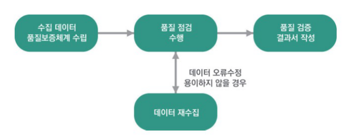
(나) 1분기 매출액은 1월, 2월, 3월 매출액의 합계와 같아야 한다.
- 정확성
- 완전성
- 적시성
- 일관성
- 데이터 품질 관리 요소 중 정확성은 데이터 값이 실제 값과 일치해야 하는 것으로 날짜의 선후 관계 정확성, 계산/집계 정확성, 최신성, 업무규칙 정확성 등을 만족해야 한다. 보기의 (가)는 선후관계 정확성, (나)는 계산집계 정확성에 대한 조건이다.
(나) 학생의 휴대전화 번호는 010으로 시작하는 11자리 번호이다.
- 정확성
- 완전성
- 적시성
- 유효성
- 데이터 품질 관리 요소 중 유효성은 데이터 항목은 정해진 데이터 유효범위 및 도메인을 충족해야 한다는 것으로 보기의 (가)는 범위 유효성, (나)는 형식 유효성에 해당한다.
- 누락된 값을 찾아낸다.
- 유일해야 하는 칼럼의 중복값 존재 여부를 파악한다.
- 연락처가 최신의 것으로 업데이트 되었는지를 파악한다.
- 메타데이터를 이용해 데이터 형식의 불일치를 찾아낸다.
- 데이터 프로파일링은 데이터 품질 진단을 위한 다양한 기법을 적용하며, 데이터 누락 값, 허용범위를 벗어나는 값, 형식 위반 등의 검사를 수행한다. 다만, 현실의 데이터가 반영된 것인지에 대한 확인은 별도의 검증 방법(휴대폰 인증, 이메일 인증 등)을 제공하지 않는 이상 프로파일링 만으로 진단하기 어렵다.
합격을 다지는 예상문제
- 수집데이터 유형파악 → 수집기술 결정 → 아키텍처 수립 → 하드웨어 구축 → 실행환경 구축
- 수집기술 결정 → 수집데이터 유형파악 → 아키텍처 수립 → 하드웨어 구축 → 실행환경 구축
- 수집데이터 유형파악 → 아키텍처 수립 → 수집기술 결정 → 하드웨어 구축 → 실행환경 구축
- 아키텍처 수립 → 수집기술 결정 → 수집데이터 유형파악 → 하드웨어 구축 → 실행환경 구축
- 비즈니스 모델
- 비즈니스 파트너
- 비즈니스 용어집
- 비즈니스 프로세스
- 데이터의 보안
- 데이터의 신속성
- 데이터의 정확성
- 데이터의 수집 가능성
- 서비스 시스템 데이터
- 네트워크 및 서버 장비 데이터
- 마케팅 데이터
- 소셜 데이터
- 비정형 데이터로는 웹로그, 센서 데이터, JSON 파일 등이 있다.
- 정형 데이터는 정형화된 스키마를 가진 데이터이다.
- 반정형 데이터는 메타 구조를 가지는 데이터이다.
- 데이터의 유형은 크게 정형 데이터, 반정형 데이터, 비정형 데이터로 나뉜다.
- 대부분 반정형, 비정형 데이터로 존재한다.
- 서비스의 수명 주기 관리가 용이하다.
- 대부분 추가적인 데이터 가공 작업이 필요하다.
- 비용 및 데이터 수집 난이도가 높다.
- 데이터의 크기 및 보관주기
- 데이터의 수집 방식
- 데이터의 역사적 가치
- 데이터의 종류
- 파일 시스템
- 분산처리 데이터베이스
- 관계형 데이터베이스
- 객체지향 데이터베이스
- 데이터의 신속성
- 소스 데이터와 비교
- 보안 사항 점검
- 저작권 점검
- 비정형 데이터를 정형 데이터 형태로 저장하는 방식
- TCP 방식에서 Open API로 수집하여 저장하는 방식
- 수집 데이터를 분산파일시스템으로 저장하는 방식
- 주제별, 시계열적으로 저장하는 방식
- 휴리스틱 가명화
- 암호화
- 교환 방법
- 제어 라운딩
- 가명처리는 개인정보 중 주요 식별요소를 다른 값으로 대체하는 방법이다.
- 총계처리는 데이터의 총합 값을 보여 주고 개별 값을 보여주지 않는 방법이다.
- 데이터 마스킹은 개인을 식별하는 데 기여할 확률이 낮은 요소들을 보이지 않게 하는 방법이다.
- 데이터 범주화는 데이터의 값을 범주의 값으로 변환하여 값을 숨기는 방법이다.
- s-보안성
- k-익명성
- l-다양성
- t-근접성
- 기능성
- 정확성
- 사용성
- 효율성
- 메타데이터 수집 및 분석
- 값의 허용 범위 분석
- 운영환경 호환성 분석
- 문자열 패턴 분석
- DBToDB
- ETL(Extract Transform Load)
- Crawling
- FTP(File Transfer Protocol)
- 관계형 데이터 스토어 간에 대량 데이터를 효과적으로 전송하기 위해 구현된 도구이다.
- 커넥터를 사용하여 MySQL, Oracle, MS SQL 등 관계형 데이터베이스의 데이터를 HDFS로 수집한다.
- 관계형 데이터베이스에서 가져온 데이터들을 하둡 맵리듀스로 변환하고 변환된 데이터들을 다시 관계형 데이터베이스로 내보낼 수 있다.
- 데이터 가져오기/내보내기 과정을 맵리듀스를 통해 처리하기 때문에 병렬처리가 가능하지만 장애에 취약하다.
- 정보 가공 시 일정한 규칙의 알고리즘을 적용하여 암호화함으로써 개인정보를 대체하는 방법이다.
- 식별자에 해당하는 값들을 몇 가지 정해진 규칙으로 대체하거나 사람의 판단에 따라 가공하여 개인정보를 숨긴다.
- 식별자의 분포를 고려하거나 수집된 자료의 사전 분석을 하지 않고 모든 데이터를 동일한 방법으로 가공한다.
- 활용할 수 있는 대체 변수에 한계가 있으며, 다른 값으로 대체하는 일정한 규칙이 노출되는 취약점이 있다.
- 대체값 부여 시에도 식별 가능한 고유 속성이 계속 유지된다.
- 분석의 다양성과 분석 결과의 유효성과 신뢰성이 저하된다.
- 정밀 분석의 어려움 및 수량이 적을 경우 추론에 의한 식별 가능성이 있다.
- 정확한 분석결과 도출의 어려움 및 데이터 범위 구간이 좁혀질 경우 추론 가능성이 있다.
- 선후 관계 정확성
- 최신성
- 참조 무결성
- 업무 규칙 정확성
합격을 다지는 예상문제 정답 & 해설
데이터 수집을 위한 시스템 구축 절차는 수집데이터 유형파악, 수집기술 결정, 아키텍처 수립, 하드웨어 구축, 실행환경 구축 순으로 수행된다.
비즈니스 도메인 정보를 습득하기 위해서는 비즈니스 모델, 비즈니스 용어집, 비즈니스 프로세스로부터 정보를 습득하고, 도메인 전문가 인터뷰를 통해 데이터의 정보를 습득한다.
원천 데이터에 대한 정보는 데이터의 수집 가능성, 데이터의 보안, 데이터 정확성, 수집 난이도, 수집 비용 항목이 필요하다.
내부 데이터에는 서비스 시스템 데이터, 네트워크 및 서버 장비 데이터, 마케팅 데이터가 있으며, 외부 데이터로는 소셜 데이터, 특정 기관 데이터, M2M 데이터, Linked Open Data가 있다.
비정형 데이터는 이미지나 동영상으로 존재하는 데이터이며, 웹로그나 센서 데이터 또는 JSON 파일의 경우 반정형 데이터에 해당한다.
외부 데이터의 경우 외부 환경에 대한 통제가 어려움에 따른 서비스 관리정책 수립이 필요하다.
데이터 확보 비용 산정을 위해서는 데이터의 종류, 데이터의 크기 및 보관 주기, 데이터의 수집 주기, 데이터의 수집 방식, 데이터의 수집 기술, 데이터의 가치성을 고려하여야 한다.
대표적인 데이터 저장 방식으로는 파일 시스템, 관계형 데이터베이스, 분산처리 데이터베이스가 있다.
데이터 적절성 검증을 위해 데이터 누락, 소스 데이터와 비교, 데이터의 정확성, 보안 사항 점검, 저작권 점검, 대량 트래픽 발생 여부를 점검해 보아야 한다.
TCP 방식에서 Open API로 수집하여 저장하는 방식은 데이터 변환 방식의 종류가 아니라 데이터를 수집하는 방식을 변경하는 것이다.
가명처리 기법의 세부기술로는 휴리스틱 가명화, 암호화, 교환 방법이 있으며, 제어 라운딩은 데이터 범주화 기법의 세부기술이다.
데이터 마스킹은 개인을 식별하는 데 기여할 확률이 높은 주요 식별자를 보이지 않도록 처리하는 방법이다.
비식별화된 개인정보의 재식별 가능성 검토 기법으로는 k-익명성, l-다양성, t-근접성이 있다.
비정형 데이터의 품질기준으로는 기능성, 신뢰성, 사용성, 효율성, 이식성이 있으며, 정형 데이터의 품질기준으로는 완전성, 유일성, 유효성, 일관성, 정확성이 있다.
정형 데이터의 품질 진단 기법으로는 메타데이터 수집 및 분석, 칼럼 속성 분석, 누락 값 분석, 값의 허용 범위 분석, 허용 값 목록 분석, 문자열 패턴 분석, 날짜 유형 분석, 기타 특수 도메인 분석, 유일 값 분석, 구조 분석 등이 있다.
크롤링(Crawling)은 인터넷상에서 제공되는 다양한 웹 사이트의 소셜 네트워크 정보, 뉴스, 게시판 등으로부터 웹 문서 및 정보를 수집하는 기술로 비정형 데이터를 수집하는 방법이다.
데이터 가져오기 내보내기 과정을 맵리듀스를 통해 처리하기 때문에 병렬처리가 가능하고 장애에도 강한 특징을 갖는다.
정보 가공 시 일정한 규칙의 알고리즘을 적용하여 암호화함으로써 개인정보를 대체하는 방법은 암호화이다.
오답 피하기
- ① 가명처리의 단점
- ③ 총계처리의 단점
- ④ 데이터 범주화의 단점
정확성의 세부 품질 기준으로는 선후 관계 정확성, 계산/집계 정확성, 최신성, 업무 규칙 정확성이 있으며, 참조 무결성은 일관성의 세부 품질 기준이다.
SECTION 02 데이터 적재 및 저장
빈출 태그 적재 · 플루언티드(Fluentd) · NoSQL DBMS · 저장시스템 선정 · 접근성 제어
01 데이터 적재
1) 데이터 적재 도구
- 수집한 데이터는 빅데이터 분석을 위한 저장 시스템에 적재해야 한다.
- 적재할 데이터의 유형과 실시간 처리 여부에 따라 관계형 데이터베이스, HDFS를 비롯한 분산파일시스템, NoSQL 저장 시스템에 데이터를 적재할 수 있다.
- 수집된 데이터를 저장시스템에 적재 시 Fluentd, Flume, Scribe, Logstash와 같은 데이터 수집 도구들을 이용하여 적재하는 방법들도 있다.
① 데이터 수집 도구를 이용한 데이터 적재
- 로그 수집을 해야 하는 각 서버에 Fluentd를 설치하면, 서버에서 로그를 수집해서 중앙 로그 저장소로 전송한다.
- Fluentd는 가장 단순한 구성에서는 로그 수집 에이전트 역할만 수행하나, 확장하면 각 서버의 Fluentd가 수집한 로그를 중앙 Fluentd로 전달하고, 중앙 Fluentd가 이를 로그 저장소에 저장하는 계층형 구조로도 구성할 수 있다.
- 중간에 Fluentd를 두는 이유는, 이 Fluentd가 먼저 들어오는 로그들을 수집해서 로그 저장소에 넣기 전에 로그 트래픽을 속도 조절하고 로그저장소의 용량에 맞게 트래픽을 조정할 수 있기 때문이다.
- 또한 로그를 여러 저장소에 복제해서 저장하거나 로그의 종류에 따라서 다른 로그 저장소로 라우팅할 수 있다.
- Fluentd 로그 수집기는 로그화 시킬 소스 데이터에 대한 환경 설정, 추출한 데이터를 어디로 전달할 것인지에 대한 설정, 실행 주기 설정 등을 통하여 다양한 데이터 수집이 가능하다.
| 데이터 수집 도구 | 설명 |
| 플루언티드(Fluentd) |
|
| 플럼(Flume) |
|
| 스크라이브(Scribe) |
|
| 로그스태시(Logstash) |
|
② NoSQL DBMS가 제공하는 도구를 이용한 데이터 적재
- 로그 수집기를 이용한 방법처럼 많은 기능을 사용할 수는 없지만, 수집한 데이터가 CSV 등의 텍스트 데이터라면 mongoimport와 같은 적재 도구를 사용하여 데이터 적재를 수행할 수 있다.
- 로그 수집 도구를 쓰는 방식처럼 데이터 수집 주기 등을 환경설정하여 사용할 수는 없다.
③ 관계형 DBMS의 데이터를 NoSQL DBMS에서 적재
- 기존의 운영 중이던 관계형 데이터베이스로부터 데이터를 추출하여 NoSQL 데이터베이스로 적재할 수도 있다.
- 데이터 변형이 많이 필요하다면, 데이터 적재를 위한 프로그램을 작성하여 적재할 수 있고, 큰 변화 없이 적재한다면 SQLtoNoSQLimporter, Mongify 등의 도구를 사용하여 적재할 수도 있다.
2) 데이터 적재 완료 테스트
① 데이터 적재 내용에 따라 체크리스트를 작성
- 정형 데이터인 경우에는 테이블의 개수와 속성의 개수 및 데이터 타입의 일치 여부, 레코드 수 일치 여부가 체크리스트가 될 수 있다.
- 반정형이나 비정형인 경우에는 원천 데이터의 테이블이 목적지 저장시스템에 맞게 생성되었는지, 레코드 수가 일치하는지 등이 체크리스트에 포함될 수 있다.
② 데이터 테스트 케이스를 개발
- 적재된 레코드 수를 확인하는 간단한 것 외에도 원천 데이터 중에 특정 데이터에 대해 샘플링을 해서 목적지 저장시스템에서 조회하는 테스트 케이스를 개발할 수 있다.
- 적재한 대량 데이터의 데이터 타입, 특별히 한글 문자 등의 ASCII 코드가 아닌 문자들이 정상적으로 적재되는지 확인이 꼭 필요하다.
- 문자열이 숫자로 이루어지면 문자열로 적재되었는지 또는 숫자인데 문자열로 적재되지는 않았는지 확인해야 한다.
③ 체크리스트 검증 및 데이터 테스트 케이스 실행
- 이전 단계에서 작성된 체크리스트와 테스트 케이스에 대해 검증을 실행한다.
- 검증 결과를 분석하여 데이터 적재 결과 보고서를 작성한다.
- 플럼(Flume)
- 스쿱(Sqoop)
- 플루언티드(Fluentd)
- HDFS
- HDFS는 분산 파일 시스템으로 데이터 저장 목적으로 사용된다.
- 플럼(Flume)
- 로그스태시(Logstash)
- 플루언티드(Fluentd)
- 하이브(Hive)
- ①, ②, ③은 데이터 수집을 위한 소프트웨어이고, Hive는 하둡기반 저장소에 대한 질의처리를 담당하는 시스템이다.
02 데이터 저장
1) 빅데이터 저장시스템
대용량 데이터 집합을 저장하고 관리하는 시스템으로 사용자에게 데이터 제공 신뢰성과 가용성을 보장하는 시스템이다.
① 파일 시스템 저장방식
- 빅데이터를 확장 가능한 분산 파일의 형태로 저장하는 방식의 대표적인 예는 Apache HDFS(Hadoop Distributed File System), 구글의 GFS(Google File System) 등을 들 수 있다.
- 파일 시스템 저장방식은 저사양 서버들을 활용하여 대용량, 분산, 데이터 집중형의 애플리케이션을 지원하며 사용자들에게 고성능 fault-tolerance 환경을 제공하도록 구현되어 있다.
② 데이터베이스 저장방식
- 빅데이터를 저장하는 방식에는 전통적인 관계형 데이터베이스 시스템을 이용하거나 NoSQL 데이터베이스 시스템을 이용하는 방식이 있다.
- NoSQL 데이터베이스는 대용량 데이터 저장 측면에서 봤을 때, 관계형 데이터베이스보다 수평적 확장성, 데이터 복제, 간편한 API 제공, 일관성 보장 등의 장점이 있다.
2) 분산 파일 시스템
① 하둡 분산파일 시스템(Hadoop Distributed File System, HDFS)
- 하둡은 아파치 진영에서 분산 환경 컴퓨팅을 목표로 시작한 프로젝트로 분산처리를 위한 파일 시스템이다.
- HDFS는 대용량 파일을 클러스터에 여러 블록으로 분산하여 저장하며, 블록들은 마지막 블록을 제외하고 모두 크기가 동일하다(기본 크기 64MB).
- HDFS는 마스터(Master) 하나와 여러 개의 슬레이브(Slave)로 클러스터링되어 구성된다.
- 마스터노드(Master Node)는 네임노드(Name Node)라고 하며 슬레이브를 관리하는 메타데이터와 모니터링 시스템을 운영한다.
- 슬레이브노드(Slave Node)는 데이터노드(Data Node)라고 하며 데이터 블록을 분산처리한다.
- 데이터 손상을 방지하기 위해서 데이터 복제 기법을 사용한다.
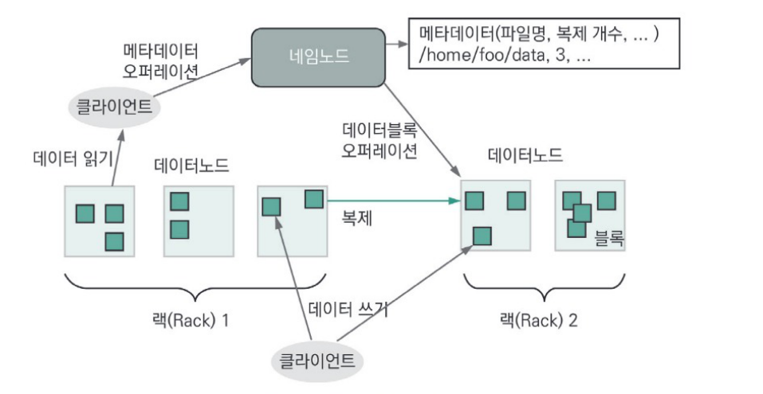
- 하둡의 DFS는 대용량의 비정형 데이터 저장 및 분석에도 효율적이다.
- 클러스터 구성을 통해 멀티 노드로 부하를 분산시켜 처리한다.
- 개별적인 서버에서 진행되는 병렬처리 결과를 하나로 묶어 시스템의 과부하나 병목 현상을 줄여준다.
- 하둡은 장비를 증가시킬 수록 성능이 향상된다.
- 오픈소스 하둡은 무료로 사용할 수 있다.
- 구글에서 발표한 MapReduce 방법을 하둡 오픈소스 프로젝트에서 구현하였다.
- MapReduce는 주어진 입력에 대해, 이를 여러 개의 부분으로 분할하고 각각의 부분에 대해 필요한 함수를 적용하여 결과값을 저장한다(Map함수와 Reduce함수로 구성).
- 분산 병렬처리가 가능하다.
예 여러 문서에 들어있는 단어의 수를 MapReduce를 통해 계산하는 과정- Input : 데이터 소스를 입력한다. (분산되어 저장되어 있는 여러 문서들)
- Splitting : 문서를 여러 개의 조각으로 나눈다. (분산 병렬처리가 가능해짐)
- Mapping : 문서 조각에 포함된 단어와 그 빈도수를 계산하여 기록한다.
- Shuffling : 각 조각별로 계산된 결과를 같은 단어들로 모은다.
- Reducing : 단어 별로 출연 빈도수를 합한다.
- Final result : 최종 합산 결과를 출력한다.
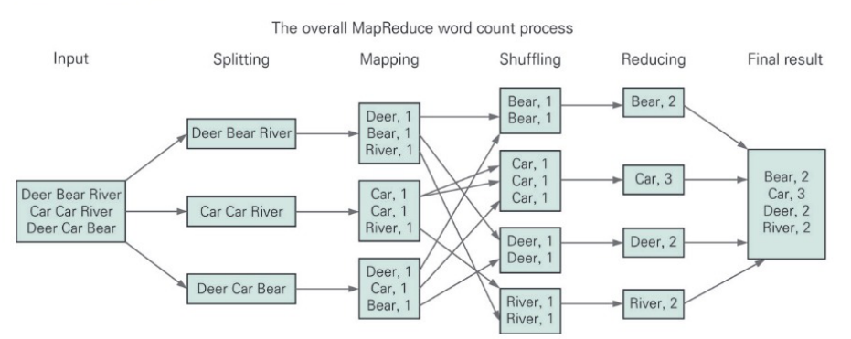
- 맵리듀스 패턴의 종류
- 단어 세기(Word Count) 패턴 : 대용량 텍스트 데이터에서 각 단어의 빈도를 계산하는데 사용된다.
- 그룹화(Grouping) 패턴 : 대용량 데이터를 그룹화하여 처리하는데 사용된다. 예를 들어, 고객 데이터를 지역별로 그룹화하여 처리할 수 있다.
- 조인(Join) 패턴 : 두 개 이상의 데이터 세트를 조인하여 처리하는데 사용된다.
- 필터링(Filtering) 패턴 : 데이터에서 특정 조건을 충족하는 레코드를 선택하는데 사용된다.
- 인버트 인덱스(Inverted Index) 패턴 : 문서 검색 엔진에서 사용되며, 단어를 키로 하고 해당 단어가 포함된 문서를 값으로 하는 인덱스를 생성하는데 사용된다.
- 최대/최소값(Maximum/Minimum) 패턴 : 대용량 데이터에서 최댓값 또는 최솟값을 찾는데 사용된다.
- 통계(Statistics) 패턴 : 대용량 데이터에서 통계적 분석을 수행하는데 사용된다. 예를 들어, 평균, 중앙값, 분산 등을 계산할 수 있다.
② 구글 파일 시스템(Google File System, GFS)
- 구글 파일 시스템(GFS 또는 GoogleFS)은 엄청나게 많은 데이터를 보유해야 하는 구글의 핵심 데이터 스토리지와 구글 검색 엔진을 위해 최적화된 분산 파일 시스템이다.
- 마스터(Master), 청크 서버(Chunk Server), 클라이언트로 구성된다.
- 마스터는 GFS 전체의 상태를 관리하고 통제한다.
- 청크서버는 물리적인 하드디스크의 실제 입출력을 처리한다.
- 클라이언트는 파일을 읽고 쓰는 동작을 요청하는 애플리케이션이다.
- 파일들은 일반적인 파일 시스템에서의 클러스터들과 섹터들과 비슷하게 64MB로 고정된 크기의 청크들로 나누어서 저장된다.
- 가격이 저렴한 서버에서도 사용되도록 설계되었기 때문에 하드웨어 안정성이나 자료들의 유실에 대해서 고려하여 설계되었고 응답시간이 조금 길더라도 데이터의 높은 처리성능에 중점을 두었다.
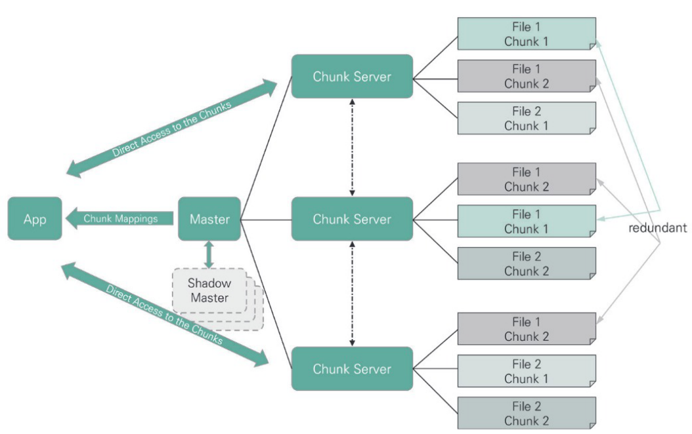
3) NoSQL
① NoSQL 개요
- NoSQL 데이터베이스는 전통적인 관계형 데이터베이스보다 유연한 데이터의 저장 및 검색을 위한 매커니즘을 제공한다.
- 대규모 데이터를 처리하기 위한 확장성, 가용성 및 높은 성능을 제공하며, 빅데이터 처리와 저장을 위한 플랫폼으로 활용된다.
- SQL 계열 쿼리를 지원하는 데이터베이스도 있어, “Not Only SQL”로 불리기도 한다.
| 구분 | 장 · 단점 | 특성 |
| RDBMS |
|
|
| NoSQL |
|
|
② CAP 이론 : 기존 데이터 저장 구조의 한계
- 2000년 버클리 대학의 에릭 브루어 교수가 발표한 이론으로, 분산 컴퓨팅 환경의 특징을 일관성(Consistency), 가용성(Availability), 지속성(Partition Tolerance) 세 가지로 정의하고, 어떤 시스템이든 이 세 가지 특성을 동시에 만족하기 어렵다고 설명한다.
- 일관성(Consistency) : 분산 환경에서 모든 노드가 같은 시점에 같은 데이터를 보여줘야 한다.
- 가용성(Availability) : 일부 노드가 다운되어도 다른 노드에 영향을 주지 않아야 한다.
- 지속성(Partition Tolerance) : 데이터 전송 중에 일부 데이터를 손실하더라도 시스템은 정상 동작해야 한다.
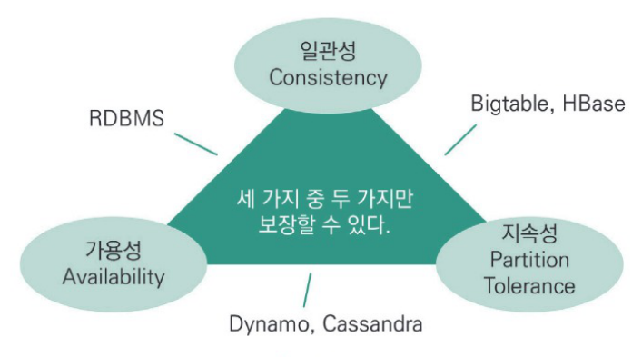
| 구분 | 설명 | 적용 예 |
| RDBMS | 일관성(C)과 가용성(A)을 선택했다. | 트랜잭션 ACID 보장(금융 서비스) |
| NoSQL | 일관성(C)이나 가용성(A) 중 하나를 포기하고, 지속성(P)을 보장한다. | C+P형 : 대용량 분산 파일 시스템(성능 보장) A+P형 : 비동기식 서비스(아마존, 트위터 등) |
③ NoSQL의 기술적 특성
NoSQL은 고전적인 관계형 데이터베이스의 주요 특성을 보장하는 ACID특성 중 일부만을 지원하는 대신 성능과 확장성을 높이는 특성을 강조한다.
| 특성 | 내용 |
| 無 스키마 |
|
| 탄력성(Elasticity) |
|
| 질의(Query) 기능 |
|
| 캐싱(Caching) |
|
④ NoSQL의 데이터 모델
- NoSQL의 데이터 저장 방식에 따라 키-값 구조, 칼럼기반 구조, 문서기반 구조로 구분할 수 있다.
- 키-값(Key-Value) 데이터베이스
- 데이터를 키와 그에 해당하는 값의 쌍으로 저장하는 데이터 모델에 기반을 둔다.
- 단순한 데이터 모델에 기반을 두기 때문에 관계형 데이터베이스보다 확장성이 뛰어나고 질의 응답시간이 빠르다.
- 아마존의 Dynamo 데이터베이스가 효시이며, Redis와 같은 In-memory 방식의 오픈소스 데이터베이스가 대표적이다.
- 열기반(칼럼기반, Column-oriented) 데이터베이스
- 데이터를 로우가 아닌 칼럼기반으로 저장하고 처리하는 데이터베이스를 말한다.
- 칼럼과 로우는 확장성을 보장하기 위하여 여러 개의 노드로 분할되어 저장되어 관리된다.
- 구글의 Bigtable이 칼럼기반 데이터베이스의 효시이며, 이로부터 파생된 Cassandra, HBase, HyperTable 등이 대표적인 칼럼기반 데이터베이스이다.
- 문서기반(Document-oriented) 데이터베이스
- 문서 형식의 정보를 저장, 검색, 관리하기 위한 데이터베이스이다.
- 키-값 데이터베이스보다, 문서의 내부 구조에 기반을 둔 복잡한 형태의 데이터 저장을 지원하고 이에 따른 최적화가 가능하다는 장점이 있다.
- 대표적으로 MongoDB, SimpleDB, CouchDB가 있다.
| 데이터 모델 | 설명 | 제품 예 |
| 키-값 저장 구조 |
|
|
| 열 기반 저장 구조 |
|
|
| 문서 저장 구조 |
|
|
| 제품(개발사) | 주요기능 및 특징 |
| DynamoDB (아마존) |
|
| Redis (Redis Labs) |
|
| MongoDB (MongoDB) |
|
| CouchDB (아파치) |
|
| SimpleDB (아마존) |
|
| Cassandra (아파치) |
|
| HBase (아파치) |
|
| Hypertable (Zvents Inc.) |
|
| Bigtable (구글) |
|
4) 빅데이터 저장시스템 선정을 위한 분석
① 기능성 비교분석
| 구분 | 내용 |
| 데이터 모델 |
|
| 확장성 |
|
| 트랜잭션 일관성 |
|
| 질의 지원 |
|
| 접근성 |
|
② 분석방식 및 환경
- 빅데이터 저장 방식은 파일 시스템 형식으로 저장하는 방식, NoSQL 저장시스템을 사용하는 방식, RDBMS에 기반을 둔 데이터 웨어하우스 방식이 있다.
- 필요로 하는 분석 및 검색결과가 상시로 온라인 형식으로 필요한지, 분석가를 통해 별도의 프로세스를 거쳐 제공받는지 등을 구분하여 저장 방식과 환경을 선택한다.
③ 분석대상 데이터 유형
- 분석대상이 되는 데이터 유형이 기업 내외부에서 발생하는 기업 데이터인가, IoT 환경에서 발생하는 데이터인가 혹은 기타 다양한 과학, 바이오, 의학 분야에서 취급되는 데이터인가에 따라 데이터의 volume, velocity, variety, veracity 등을 고려하여 빅데이터 저장시스템을 선택한다.
④ 기존 시스템과의 연계
- 저장 대상 데이터의 유형이 대부분 테이블로 정의될 수 있는 형태이고 기존에 RDBMS 기반의 데이터 웨어하우스가 도입된 형태라면 기존 시스템을 그대로 활용하여 저장한다.
- 기존에 HDFS만을 활용하여 빅데이터 저장시스템이 구축되어 있으나, SQL-like 분석환경을 구축하고자 한다면 HBase를 추가 도입하는 것을 권장한다.
- 빅데이터 분석 애플리케이션이 키-값 쌍 처리 위주로 시스템이 구현되어 있다면 Redis 등을 도입하는 것이 좋다.
- IoT 데이터처럼 다양한 데이터가 지속해서 실시간 발생하는 것을 수집하는 시스템 환경이라면 key-value, 데이터베이스나 확장성이 중요한 요소라면 Cassandra와 같이 확장성이 보장된 칼럼 기반 데이터베이스를 선정하는 것이 좋다.
5) 데이터 발생 유형 및 특성
① 대용량 실시간 서비스 데이터 개요
- 대상 데이터의 용량, 실시간 여부, 정형, 비정형 등 유형 및 요건을 파악하여 빅데이터 저장 계획 수립에 반영하여야 한다.
- 일반적으로 실시간으로 처리해야 하는 데이터를 스트리밍 데이터로 통칭하는데 대용량의 특성과 무중단 서비스를 보장하는 저장 체계를 구축해야 한다.
- 실시간 데이터 처리를 위해 사용되는 시스템으로는 대표적으로 스파크(Spark), 스톰(Storm) 등이 있으며 배치 기반의 대용량 데이터 처리에 특화된 하둡 시스템보다 실시간 대용량 데이터 처리에 특화되어 있다.
- IoT(Internet of Things)에서 발생하는 센서 데이터, 네트워크 모니터링 데이터, 에너지 관리 분야 데이터, 통신 데이터, 웹 로그, 주식 데이터나 생산현장에서 발생하는 데이터 등이 이에 해당한다.
② 대용량 실시간 서비스 데이터 저장
- 실시간 빅데이터 처리를 위해 스톰(Storm)을 사용한다고 가정하면, 스톰은 저장소가 없으므로 외부 저장 시스템과의 연동이 필수적이다.
- 다양한 소스의 로그로부터 데이터가 발생하는 환경에서는 스톰을 통하여 데이터를 전처리한 후 HDFS나 MongoDB, Cassandra, HBase와 같은 NoSQL을 저장소로 사용하거나, 데이터를 정규화하여 일반 RDBMS를 저장소로 사용할 수도 있다.
- 대표적인 실시간 데이터 처리 시스템인 스파크(Spark) 역시 내장된 저장소를 제공하지 않기 때문에 외부 빅데이터 저장 시스템과의 연계가 필수적이다.
- 실시간 서비스를 웹 페이지로 제공하는 것이 필요한 환경에서는 Redis와 같은 메인 메모리 저장 시스템을 저장소로 사용하기도 한다.
6) 안정성과 신뢰성 확보 및 접근성 제어계획 수립
① 빅데이터 저장시스템 안정성 및 신뢰성 확보
- 안정성 및 신뢰성을 확보하고 보장하기 위해 저장 계획 수립단계에서 용량산정이 필요하다.
- 조직의 빅데이터 활용목적에 부합하는 현재와 향후 증가 추세를 추정 반영한다.
② 접근성 제어계획 수립
- 저장 시스템의 사용자와 관리자 유형, 역할 및 기능을 정의하고 각각에 해당하는 제어계획을 수립한다.
- HBase
- Cassandra
- Bigtable
- DynamoDB
- ①, ②, ③은 모두 열기반(칼럼기반) 데이터모델을 사용하며, DynamoDB는 키-값(key-value) 데이터 모델을 사용한다.
- 고정된 데이터 스키마가 존재하지 않고 데이터 저장을 위한 다양한 모델을 사용한다.
- 분산 컴퓨팅 환경에서 일관성, 가용성, 지속성을 동시에 지원한다.
- 대용량 데이터를 처리하기 위해 입출력 부하를 분산시킨다.
- 데이터 검색을 위한 질의언어나 API를 제공한다.
- NoSQL 데이터베이스는 대규모 데이터를 처리하기 위한 확장성, 가용성 및 높은 성능을 제공하지만, CAP이론에 따라 일관성, 가용성, 지속성을 동시에 만족하는 시스템을 구현하기는 어렵다.
합격을 다지는 예상문제 (SECTION 02)
- 파티션의 개수
- 테이블의 개수
- 속성의 개수
- 레코드의 개수
- key-value 데이터베이스
- column-oriented 데이터베이스
- relational 데이터베이스
- document 데이터베이스
- 기능성 비교분석
- 분석대상 데이터 유형
- 사용자 교육 용이성
- 기존 시스템과의 연계성
- 트랜잭션 일관성
- 확장성
- 데이터모델
- 호환성
- 비용효율성
- 대용량성
- 실시간성
- 무중단성
- 관계형 데이터베이스보다 확장성이 뛰어나다.
- 인덱스가 없어 질의응답 시간이 느리다.
- 데이터를 키와 그에 해당하는 값의 쌍으로 저장하는 방식이다.
- 단순한 데이터 모델에 기반을 두고 있다.
- 플루언티드(Fluentd)
- 맵리듀스(MapReduce)
- 스크라이브(Scribe)
- 로그스태시(Logstash)
- 하둡은 아파치 진영에서 분산 환경 컴퓨팅을 목표로 시작한 프로젝트로 분산 처리를 위한 파일 시스템이다.
- 데이터 손상을 방지하기 위해서 데이터 복제 기법을 사용한다.
- HDFS는 대용량 파일을 클러스터에 여러 블록으로 분산하여 저장한다.
- 클러스터에 저장되는 블록들은 마지막 블록을 제외하고 모두 크기가 동일하며 기본 크기는 32MB이다.
- 하둡의 DFS는 대용량의 비정형 데이터 저장 및 분석에도 효율적이다.
- 오픈소스 하둡은 무료로 사용할 수 있으며, 이용자가 많아 언제든 기술지원이 용이하다.
- 개별적인 서버에서 진행되는 병렬처리 결과를 하나로 묶어 시스템의 과부하나 병목현상을 줄여준다.
- 하둡은 장비의 수를 증가시킬수록 성능이 향상된다.
- Input – Splitting – Shuffling – Mapping – Reducing – Final result
- Input – Splitting – Mapping – Shuffling – Reducing – Final result
- Input – Mapping – Splitting – Shuffling – Reducing – Final result
- Input – Splitting – Shuffling – Reducing – Mapping – Final result
- NoSQL 데이터베이스는 전통적인 관계형 데이터베이스보다 유연한 데이터의 저장 및 검색을 위한 매커니즘을 제공한다.
- 대규모 데이터를 처리하기 위한 확장성, 가용성 및 높은 성능을 제공하며 빅데이터 처리와 저장을 위한 플랫폼으로 활용된다.
- 분산 컴퓨팅 특징 중에서 일관성(Consistency)과 가용성(Availability)을 보장하고, 지속성(Partition Tolerance)을 포기한다.
- 고전적인 관계형 데이터베이스의 주요 특성을 보장하는 ACID 특성 중 일부만을 지원하는 대신 성능과 확장성을 높였다.
- 연관된 데이터 위주로 읽는데 유리한 구조이다.
- 하나의 레코드를 변경하려면 여러 곳을 수정해야 한다.
- 동일 도메인의 열 값이 연속되므로 압축 효율이 좋다.
- 범위 질의는 사용이 어렵다.
- 연관된 데이터 위주로 읽는데 유리한 구조이다.
- 문서마다 다른 스키마가 있다.
- 레코드 간의 관계 설명이 가능하다.
- 개념적으로 관계형 데이터베이스와 비슷하다.
- 데이터 무결성과 정확성을 보장한다.
- 강한 일관성은 불필요하다.
- 정규화된 테이블과 소규모 트랜잭션이 있다.
- 확장성에 한계가 있으며, 클라우드 분산 환경에 부적합하다.
- 분산 환경에서 모든 노드가 같은 시점에 같은 데이터를 보여줘야 하는 것을 일관성이라 한다.
- 일부 노드가 다운되어도 다른 노드에 영향을 주지 않아야 하는 것을 가용성이라 한다.
- 데이터 전송 중에 일부 데이터를 손실하더라도 시스템은 정상 동작해야 하는 것을 지속성이라 한다.
- NoSQL 데이터베이스는 일관성과 가용성, 지속성 모두를 보장한다.
- 관계형 데이터베이스는 일관성과 가용성이 보장되어야 한다.
- 대용량 분산 파일 시스템은 일관성과 지속성이 보장되어야 한다.
- 비동기식 서비스는 가용성과 지속성이 보장되어야 한다.
- 분산 병렬 시스템은 일관성, 가용성, 지속성 모두가 보장되어야 한다.
- 데이터를 정확하고 효율적으로 생성, 검색, 갱신, 삭제할 수 있는 표준 SQL 질의 언어를 제공한다.
- 고정된 데이터 스키마 없이 키 값을 이용하여 다양한 형태의 데이터 저장 및 접근이 가능하다.
- 응용 시스템의 다운 타임이 없도록 하는 동시에 대용량 데이터의 생성 및 갱신한다.
- 대규모 질의에도 고성능 응답 속도를 제공할 수 있는 메모리 기반 캐싱 기술을 적용하는 것이 중요하다.
- 데이터 수정, 삭제 등의 작업이 빈번하게 일어나는 환경에서 중요도가 높다.
- 트랜잭션의 일관성이 중요한 분야에서는 NoSQL을 선택하고, 그렇지 않은 때에만 RDBMS를 선택하여야 한다.
- 배치중심의 하둡 기반 분석환경에서는 중요도가 그리 높지 않다.
- 데이터베이스 트랜잭션이 안전하게 수행된다는 것을 보장하기 위한 ACID 요소 중 하나의 성질이다.
- MongoDB는 SQL과 유사한 문법에 기반을 두어 쉽게 학습할 수 있는 우수한 질의 인터페이스를 지원한다.
- CouchDB는 MongoDB와 비슷한 기능을 제공하며, 뷰 개념을 이해하고 활용하면 간편하다.
- Hbase나 HyperTable은 자체 질의 지원 기능을 제공하여 편리하게 이용할 수 있다.
- key-value 데이터베이스의 대표격인 Redis는 풍부한 질의기능을 제공한다.
- 대상 데이터의 용량, 정형/비정형 등 유형 및 요건을 파악하여 빅데이터 저장 계획 수립에 반영하여야 한다.
- 대용량의 특성과 무중단 서비스를 보장하는 저장 체계를 구축해야 한다.
- 실시간 서비스를 웹 페이지로 제공하는 것이 필요한 환경에서는 RDBMS와 같은 정형화된 저장소를 사용하기도 한다.
- 스파크는 내장된 저장소를 제공하지 않으므로 외부 저장 시스템과의 연계가 필수적이다.
- 칼럼기반 데이터 저장 구조를 사용한다.
- 마스터노드와 슬레이브 노드로 구성되며, 데이터는 슬레이브 노드에 저장된다.
- 하나의 데이터는 하나의 데이터 노드에 매핑되어 저장된다.
- 구글의 파일 시스템의 기본 구조로 사용된다.
합격을 다지는 예상문제 정답 & 해설 (SECTION 02)
정형 데이터 체크리스트 항목으로는 테이블의 개수와 속성의 개수 및 데이터 타입의 일치 여부, 레코드 수 일치 여부가 될 수 있다.
NoSQL 데이터베이스 저장방식의 경우 key-value 데이터베이스, column-oriented 데이터베이스, document 데이터베이스가 있다.
빅데이터 저장시스템 선정을 위한 분석 시 기능성 비교분석, 분석방식 및 환경, 분석대상 데이터 유형, 기존 시스템과의 연계성 등을 고려하여야 한다.
빅데이터 저장시스템 선정을 위한 기능성 비교분석 요소로는 데이터모델, 확장성, 트랜잭션 일관성, 질의지원, 접근성이 있으며, 호환성은 기존 시스템과의 연계성의 요소로 볼 수 있다.
스트리밍 데이터의 경우 대용량성, 실시간성, 무중단성의 특징은 갖고 있지만, 실시간 처리의 성격상 비용효율적이지는 못하다.
key-value 데이터베이스는 데이터를 키와 그에 해당하는 값의 쌍으로 저장하는 방식이며, 단순한 데이터 모델에 기반을 두기 때문에 관계형 데이터베이스보다 확장성이 뛰어나고 질의 응답시간도 빠르다.
데이터 수집을 위한 도구로는 플루언티드(Fluentd), 플럼(Flume), 스크라이브(Scribe), 로그스태시(Logstash) 등이 있으며, 맵리듀스(MapReduce)는 데이터를 효율적으로 처리하기 위한 기술이다.
HDFS는 대용량 파일을 클러스터에 여러 블록으로 분산하여 저장하며, 블록들은 마지막 블록을 제외하고 모두 크기가 동일하다. 기본 크기는 64MB이다.
하둡은 오픈소스로 별도 라이센스 구입 비용을 절약할 수 있지만, 상용 소프트웨어에 비해 기술지원이 쉽지 않다.
데이터 소스를 입력 받아 이를 여러 개의 조각으로 나누어 조각에 포함된 단어와 그 빈도수를 계산하여 기록한다. 이후 각 조각 별로 계산된 결과를 같은 단어들로 모아 단어 별로 출연 빈도수를 합하여 최종 합산한 결과를 출력한다.
NoSQL은 일관성이나 가용성 중 하나를 포기하고, 지속성을 보장한다.
column-oriented 데이터베이스는 범위 질의에 유리하며, 범위 질의에 사용이 어려운 것은 key-value 데이터베이스의 특징이다.
연관된 데이터 위주로 읽는데 유리한 구조는 column-oriented 데이터베이스의 특징이다.
강한 일관성이 불필요한 것은 NoSQL 데이터베이스의 특징이다.
NoSQL 데이터베이스는 일관성이나 가용성 중 하나를 포기하고, 지속성을 보장한다.
분산 컴퓨팅 환경의 특징을 일관성(Consistency), 가용성(Availability), 지속성(Partition Tolerance) 세 가지로 정의할 수 있으며, 어떤 시스템이든 이 세 가지 특성을 동시에 만족하기는 어렵다.
수십 대에서 수천 대 규모로 구성된 시스템에서도 데이터의 특성에 맞게 효율적으로 데이터를 검색, 처리할 수 있는 질의 언어, 관련 처리 기술, API를 제공한다.
트랜잭션의 일관성이 중요한 분야에서는 RDBMS를 선택하고, 그렇지 않은 때에만 NoSQL을 선택하여야 한다.
Hbase나 HyperTable은 자체 질의 지원 기능은 제공하지 않으나 Hive를 통해 SQL과 유사한 형태의 질의기능을 사용할 수 있다.
실시간 서비스를 웹 페이지로 제공하는 것이 필요한 환경에서는 Redis와 같은 메인 메모리 저장 시스템을 저장소로 사용하기도 한다.
HDFS는 데이터를 분산해서 저장하는 구조를 제공하며, 저장되는 데이터 형식과 모델을 지정하지 않는다. 하나의 데이터는 여러 노드에 복제/분산되어서 저장되어 장애로 인한 데이터 손실이 발생해도 쉽게 복구가 가능하다. 구글은 구글 파일 시스템을 사용한다.